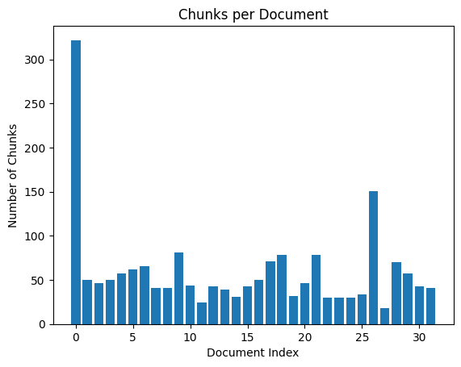

I have the following url links and I have downloaded the pdfs in my local. I want to index the content (images/text) of the pdfs in qdrant database. https://sustainability.aboutamazon.com/2023-amazon-sustainability-report.pdf://arxiv.org/pdf/2405.01814://arxiv.org/pdf/2505.06371://arxiv.org/pdf/2405.21015://arxiv.org/pdf/2206.05229://arxiv.org/pdf/2410.06681://arxiv.org/pdf/2306.03163://arxiv.org/pdf/2504.17674://arxiv.org/pdf/2404.14527://arxiv.org/pdf/2412.06288://arxiv.org/pdf/2505.09598://arxiv.org/pdf/2504.06307://arxiv.org/pdf/2504.11816://arxiv.org/pdf/2309.03852://arxiv.org/pdf/2304.03271://arxiv.org/pdf/2302.08476://arxiv.org/pdf/2311.16863://arxiv.org/pdf/2501.16548://arxiv.org/pdf/2504.00797://arxiv.org/pdf/2506.15572://arxiv.org/pdf/2503.05804://arxiv.org/pdf/2104.10350://arxiv.org/pdf/2501.05899://arxiv.org/pdf/2310.03003://arxiv.org/pdf/1907.10597://arxiv.org/pdf/2404.07413://arxiv.org/pdf/2211.06318://arxiv.org/pdf/1906.02243://arxiv.org/pdf/2111.00364://arxiv.org/pdf/2108.06738://arxiv.org/pdf/2408.04693://arxiv.org/pdf/2508.14170
Also I have metadata of these pdfs stored in metadata.csv. I also want to index along with the content of the pdfs. Eventually I want to build a rag database
How shall I proceed?
🤖Reply🤖
Great project! Building a RAG database with PDFs and metadata is a powerful way to create a searchable knowledge base. Let me help you break this down into manageable steps.
First, let me understand your current setup better:
Do you already have Qdrant installed and running (locally or cloud)?
What does your metadata.csv look like? (What columns does it have?)
Are you comfortable with Python libraries like langchain, pymupdf, or unstructured for PDF processing?
For the overall approach, we’ll need to: - Extract text and images from PDFs - Chunk the content appropriately - Generate embeddings - Store everything in Qdrant with metadata
Which of these areas would you like to start with, or would you prefer I suggest a specific first step?
Yes Qdrant client is installed locally. I would like to use the qdrant database in the cloud.
Metadata.csv has the columns id, type, title, year, citation, url id is the document id type is either report or paper. As you can see there are 31 papers and 1 report title is the title of the report/paper year is the year when the report/paper was published url is the url of the report/paper
No I am not familiar with any of those libraries
You please suggest a specific first step
🤖Reply🤖
Perfect! Let’s start with the first step: setting up the basic libraries you’ll need.
Since you’re not familiar with the PDF processing libraries, I recommend starting with pymupdf (also called fitz) - it’s reliable and handles both text and images well.
Once you’ve installed these, let’s take a quick look at your metadata.csv to understand the structure better. Can you run this small code snippet to show us the first few rows?
import pandas as pddf = pd.read_csv('metadata.csv')print(df.head())print(f"Total documents: {len(df)}")
This will help us see exactly what we’re working with before we start processing the PDFs. Have you installed the libraries and can you show me what the metadata looks like?
import pandas as pddf = pd.read_csv('metadata.csv', encoding='latin-1')df.head(n=2)
Yes I installed the packages and also executed the code
🤖Reply🤖
Excellent! I can see you have 32 documents with good metadata structure. Now let’s test if we can read one of your PDF files to make sure everything is working.
Can you try reading one PDF file first? Pick any PDF from your local folder and test this:
import fitz # PyMuPDF# Replace 'your_pdf_filename.pdf' with the actual filenamedoc = fitz.open('your_pdf_filename.pdf')print(f"Number of pages: {len(doc)}")print(f"First page text preview: {doc[0].get_text()[:200]}...")doc.close()
What’s the filename of one of your PDFs? Once we confirm we can read the PDFs properly, we’ll move to the next step of setting up the Qdrant cloud connection.
Apologies I did not download the pdf
🤖Reply🤖
No problem! Let’s download the PDFs first. We can use Python to download them from the URLs in your metadata.csv.
Here’s a simple approach to download one PDF first to test:
import requests# Let's download the first PDF as a testurl = df.iloc[0]['url'] # Amazon sustainability reportfilename =f"{df.iloc[0]['id']}.pdf"response = requests.get(url)withopen(filename, 'wb') as f: f.write(response.content)print(f"Downloaded: {filename}")
Try this first to download one PDF. Once we confirm it works, we can download all of them in a loop.
Great! Now let’s test reading that PDF to make sure we can extract text from it:
import fitzwith fitz.open(data_path/'amazon2023.pdf') as doc:print(f"Number of pages: {len(doc)}")print(f"First page text preview:\n{doc[0].get_text()[:300]}...")
Once we confirm this works, we can proceed to download all the other PDFs. Does this show you some text from the Amazon report?
import fitzwith fitz.open(data_path/'amazon2023.pdf') as doc:print(f"Number of pages: {len(doc)}")print(f"First page text preview:\n{doc[0].get_text()[:300]}...")
Number of pages: 98
First page text preview:
Amazon
Sustainability
Report
2023
...
Yes, lets proceed
🤖Reply🤖
Perfect! Now let’s download all the remaining PDFs. Here’s a simple loop to get them all:
I’d recommend chunks of around 500-1000 characters with some overlap between chunks to avoid cutting sentences in half.
For the embedding model, we have options like: - sentence-transformers/all-MiniLM-L6-v2 (lightweight, good for general use) - sentence-transformers/all-mpnet-base-v2 (higher quality, larger)
Which embedding model would you prefer to start with - the lighter/faster one or the higher quality one?
!du -sh watt_bot_data
66M watt_bot_data
I have the pdfs of size 65 MB. In qdrant cloud I have the disk space of 4GB and RAM of 1GB. Is the qdrant cloud size enough? Lets use the lightweight embedding model
🤖Reply🤖
Yes, your Qdrant cloud resources should be sufficient! Here’s a rough estimate:
65MB of PDFs will likely extract to ~10-20MB of text
With 500-1000 character chunks, you’ll have roughly 20,000-40,000 chunks
Using the lightweight model (384 dimensions), each vector is ~1.5KB
Total storage needed: ~60-100MB for vectors + metadata
This fits comfortably in your 4GB disk space and 1GB RAM.
Let’s install the lightweight embedding model:
!pip install sentence-transformers
Once that’s installed, should we start processing one PDF first to test our pipeline before doing all 32?
What about the images in the PDF?
🤖Reply🤖
Great question! Images in PDFs can contain valuable information like charts, graphs, and diagrams that are important for a comprehensive RAG system.
For handling images, we have a few options:
Extract and describe images - Use vision models (like CLIP or BLIP) to generate text descriptions of images
OCR for text in images - Extract any text embedded in charts/diagrams
Skip images for now - Focus on text-only initially, add image processing later
Given your cloud resources and that this is your first RAG system, which approach interests you most? Would you like to start with text-only and add image processing later, or tackle images from the beginning?
!pip install -q sentence-transformers
Lets do with text
🤖Reply🤖
Perfect! Let’s focus on text extraction and processing first.
Now let’s create our first collection in Qdrant and set up the embedding model. We’ll need to:
Initialize the embedding model
Create a collection with the right vector dimensions
Test with one PDF first
Let’s start by initializing the embedding model:
from sentence_transformers import SentenceTransformermodel = SentenceTransformer('sentence-transformers/all-MiniLM-L6-v2')print(f"Model loaded. Vector dimension: {model.get_sentence_embedding_dimension()}")
Can you run this to load the model?
from sentence_transformers import SentenceTransformermodel = SentenceTransformer('sentence-transformers/all-MiniLM-L6-v2')model.get_sentence_embedding_dimension()
/usr/local/lib/python3.12/site-packages/tqdm/auto.py:21: TqdmWarning: IProgress not found. Please update jupyter and ipywidgets. See https://ipywidgets.readthedocs.io/en/stable/user_install.html
from .autonotebook import tqdm as notebook_tqdm
384
I ran the model. Now next what
🤖Reply🤖
Great! The model is loaded and creates 384-dimensional vectors. Now let’s create a collection in Qdrant to store our document chunks.
from qdrant_client.models import Distance, VectorParamscollection_name ="wattbot_documents"client.create_collection( collection_name=collection_name, vectors_config=VectorParams(size=384, distance=Distance.COSINE))print(f"Collection '{collection_name}' created successfully!")
This creates a collection that can store our 384-dimensional vectors with cosine similarity for search. Should we run this?
from qdrant_client.models import Distance, VectorParamscollection_name ="wattbot_documents"ifnot client.collection_exists(collection_name): client.create_collection(collection_name=collection_name, vectors_config=VectorParams(size=384, distance=Distance.COSINE))
Okay what is next?
🤖Reply🤖
Excellent! The collection is created successfully. Now let’s process one PDF to test our pipeline. We need to:
Extract text from a PDF
Split it into chunks
Create embeddings and store them in Qdrant
Let’s start by extracting and chunking text from the Amazon report:
import contextkit.read as rd# Test with one PDFtext = rd.read_pdf(data_path/'amazon2023.pdf')print(f"Extracted {len(text)} characters")print(f"First 200 chars: {text[:200]}")
Should we run this to see how much text we extract?
import contextkit.read as rd# Test with one PDFtext = rd.read_pdf(data_path/'amazon2023.pdf')print(f"Extracted {len(text)} characters")print(f"First 200 chars: {text[:200]}")
Extracted 450063 characters
First 200 chars: Amazon
Sustainability
Report
2023 Contents
Overview
3 Introduction
4 A Letter from Our Chief
Sustainability Officer
5 How We Work
6 Goals Summary
7 2023 Year in Review
Environment
9 Carbon
24 Ca
Okay now what is next?
🤖Reply🤖
Great! We extracted 450,063 characters from the Amazon report. Now we need to split this into smaller chunks for better retrieval.
Let’s create chunks of around 800 characters with some overlap:
Why do we need overlap? Can we use the fastcore chunked function https://fastcore.fast.ai/basics.html#chunked?
🤖Reply🤖
Great questions!
Why overlap? When we split text at fixed positions, we might cut sentences or paragraphs in the middle. Overlap helps ensure that complete thoughts/concepts appear in at least one chunk, improving retrieval quality.
Using fastcore.chunked: Yes, we can use fc.chunked! However, it splits by number of items (characters), not by semantic boundaries. Let’s try it:
Would you like to try this simpler approach first, or should we implement overlap for better semantic chunking?
Is there a name for this chunking?
🤖Reply🤖
Yes! There are several names for different chunking strategies:
Fixed-size chunking - What fc.chunked does (split by character/token count)
Overlapping chunking - Fixed-size with overlap between chunks
Semantic chunking - Split by sentences, paragraphs, or meaning
Recursive chunking - Try sentences first, then paragraphs, then fixed-size as fallback
The overlap approach is often called “sliding window chunking” because each chunk “slides” over the previous one.
Which approach sounds most appealing to you for your RAG system?
Is there a way to use islice?
🤖Reply🤖
Yes! itertools.islice can be great for creating overlapping chunks efficiently. You can use it to create a sliding window pattern:
from itertools import islicedef sliding_window_chunks(text, chunk_size=800, step=700):for i inrange(0, len(text), step):yield text[i:i+chunk_size]
This creates chunks of 800 characters with 100 character overlap (800-700=100). The islice approach would be more memory-efficient for very large texts.
Would you like to try this sliding window approach, or do you prefer the simpler fixed-size chunking for now?
But the above one is not using islice
🤖Reply🤖
You’re absolutely right! That example doesn’t use islice at all. Here’s how you could actually use islice for chunking:
from itertools import islicedef islice_chunks(text, chunk_size=800): it =iter(text)while chunk :=''.join(islice(it, chunk_size)):yield chunk
This uses islice to take chunk_size characters at a time from the text iterator.
Would you like to try this islice approach, or would you prefer to stick with a simpler method for now?
from itertools import islicedef sliding_window_chunks(text, chunk_size=800, step=700):for i inrange(0, len(text), step):yield text[i:i+chunk_size]
(643,
'Amazon \nSustainability \nReport\n2023 Contents\nOverview\n3 Introduction\n4 A Letter from Our Chief \nSust')
What is next?
🤖Reply🤖
Perfect! You’ve created 643 chunks from the Amazon report. Now let’s create embeddings for these chunks and store them in Qdrant.
Let’s start with just the first few chunks to test:
# Test with first 3 chunkstest_chunks = chunks[:3]embeddings = model.encode(test_chunks)print(f"Created embeddings shape: {embeddings.shape}")
Should we run this to see if the embedding generation works?
# Test with first 3 chunkstest_chunks = chunks[:3]embeddings = model.encode(test_chunks)embeddings.shape
(3, 384)
Yes that is working
🤖Reply🤖
Excellent! The embeddings are working perfectly - 3 chunks with 384-dimensional vectors each.
Now let’s store these test chunks in Qdrant with their metadata. We need to create points with: - Vectors (embeddings) - Payload (metadata like document ID, chunk text, etc.)
from qdrant_client.models import PointStructpoints = [ PointStruct(id=i, vector=embeddings[i].tolist(), payload={"text": chunk, "doc_id": "amazon2023", "chunk_id": i} )for i, chunk inenumerate(test_chunks)]
Should we create these points and upload them to test the storage?
Would not be storing the metadata information like type, title, year, citation and url?
🤖Reply🤖
Absolutely! You’re right - we should include all the metadata from your CSV file. Let me modify the payload to include that information:
# Get metadata for amazon2023 documentdoc_metadata = df[df['id'] =='amazon2023'].iloc[0]points = [ PointStruct(id=i, vector=embeddings[i].tolist(), payload={"text": chunk, "doc_id": "amazon2023", "chunk_id": i,"type": doc_metadata['type'],"title": doc_metadata['title'],"year": doc_metadata['year'],"citation": doc_metadata['citation'],"url": doc_metadata['url'] } )for i, chunk inenumerate(test_chunks)]
Should we create these points with the full metadata?
# Get metadata for amazon2023 documentfrom qdrant_client.models import PointStructdef create_payload(index, chunk, doc_id): r = df[df['id'] == doc_id].iloc[0]return {"text": chunk, "doc_id": doc_id, "chunk_id": index, "type": r['type'], "title": r['title'], "year": int(r['year']), "citation": r['citation'], "url": r['url']}points = [ PointStruct(id=i, vector=model.encode(chunk).tolist(), payload=create_payload(i, chunk, 'amazon2023')) for i, chunk inenumerate(test_chunks)]# Upload to Qdrantclient.upsert(collection_name=collection_name, points=points)print(f"Uploaded {len(points)} points to Qdrant!")
Uploaded 3 points to Qdrant!
Does the upsert replaces the existing points or create duplicates?
🤖Reply🤖
Great question! upsert will replace existing points if they have the same ID, not create duplicates.
Since we’re using sequential IDs (0, 1, 2…), if you run the same code again, it will overwrite those 3 points rather than create new ones.
For processing all documents, we’ll need unique IDs across all chunks. Should we modify the ID strategy to avoid conflicts when we process multiple documents?
Not needed for now. What is next?
🤖Reply🤖
Great! Now let’s test if our search functionality works. We can query the collection to see if we get relevant results back:
/tmp/ipykernel_55/96134313.py:4: DeprecationWarning: `search` method is deprecated and will be removed in the future. Use `query_points` instead.
results = client.search(collection_name=collection_name, query_vector=query_vector, limit=2)
ScoredPoint(id=2, version=20, score=0.5657909, payload={'text': 'ios, and Ring.\nOur 2023 Sustainability Report is structured into three \nmain categories: Environment, Value Chain, and People. In \nthe Environment\xa0 section, we discuss scaling our work, \npartnering with others, and inventing new solutions to \nminimize our emissions, waste, and water use; increasing \nour use of carbon-free energy; and pioneering solutions to \nimprove packaging, products, and the materials we use. In \nthe Value Chain\xa0 section, we discuss our commitment to \nrespect the human rights of people connected to our global \nbusiness, managing a responsible supply chain, creating \nsustainable products and using more sustainable materials, \nadvancing supplier diversity, and having a positive impact on \nthe communities where we operate. In the People\xa0 section, \nwe discuss our ambitio', 'doc_id': 'amazon2023', 'chunk_id': 2, 'type': 'report', 'title': '2023 Amazon Sustainability Report', 'year': 2023, 'citation': 'Amazon Staff. (2023). Amazon Sustainability Report. https://sustainability.aboutamazon.com/2023-amazon-sustainability-report.pdf', 'url': 'https://sustainability.aboutamazon.com/2023-amazon-sustainability-report.pdf'}, vector=None, shard_key=None, order_value=None)
Ok so what is next?
🤖Reply🤖
Perfect! The search is working (though we should use query_points instead of the deprecated search method).
Now that our pipeline works for one document, we have two options:
Scale up: Process all 32 PDFs and store everything in Qdrant
Build query interface: Create a simple function to search and retrieve relevant chunks
Which would you like to tackle first - processing all your documents, or creating a better search interface?
Lets use the query_points and scale up
🤖Reply🤖
Great choice! Let’s first update to use query_points and then scale up.
Here’s the updated search method:
from qdrant_client.models import Queryresults = client.query_points(collection_name=collection_name, query=query_vector, limit=2)print(results.points[0].payload['text'][:100])
Should we test this updated search method first, then move on to processing all 32 PDFs?
from qdrant_client.models import Queryresults = client.query_points(collection_name=collection_name, query=query_vector, limit=2)print(results.points[0].payload['text'][:100])
ios, and Ring.
Our 2023 Sustainability Report is structured into three
main categories: Environment
Lets scale up
🤖Reply🤖
Perfect! Now let’s scale up to process all 32 PDFs. We need to create a function that processes each document and generates unique IDs.
Here’s the approach - should I write the full processing function for you, or would you prefer to build it step by step?
The function would: 1. Loop through each row in your metadata CSV 2. Extract text from each PDF 3. Create chunks with unique IDs 4. Generate embeddings and store in Qdrant
What’s your preference?
def create_point(idx, chunk, doc_id):return PointStruct(id=f'{doc_id}_{idx}', vector=model.encode(chunk).tolist(), payload=create_payload(id, chunk, doc_id))def create_points(doc_id): text = rd.read_pdf(data_path/f"{doc_id}.pdf")return fc.L([create_point(i, chunk, doc_id) for i, chunk inenumerate(sliding_window_chunks(text))])all_ids = fc.L(df['id'].tolist())print(all_ids[:2])# all_points = fc.parallel(create_points, all_ids, threadpool=True)# len(all_points.flatten())
['amazon2023', 'chen2024']
Each text extraction and chunking will take lot of time. How shall we optimize it?
🤖Reply🤖
Good thinking about optimization! You’ve already set up parallel processing with fc.parallel which is great. Here are a few optimization strategies:
Batch processing: Process embeddings in batches instead of one-by-one
Async processing: Use async operations for I/O
Caching: Save processed chunks to disk to avoid reprocessing
Since you’re using threadpool=True, that should help with the PDF reading. For embeddings, you could batch them:
# Instead of encoding each chunk individuallyembeddings = model.encode([chunk for chunk in chunks]) # Batch encode
Which optimization interests you most - batching the embeddings or adding progress tracking first?
Batching the embedding
🤖Reply🤖
Great choice! Batching embeddings will be much faster than encoding one chunk at a time.
Here’s how to modify your create_point function to work with batched embeddings:
def create_points_batched(doc_id): text = rd.read_pdf(data_path/f"{doc_id}.pdf") chunks =list(sliding_window_chunks(text)) embs = model.encode(chunks) # Batch encode all chunks at oncereturn [PointStruct(id=f'{doc_id}_{i}', vector=embs[i].tolist(), payload=create_payload(i, chunk, doc_id)) for i, chunk inenumerate(chunks)]
Should we test this with one document first to see the speed improvement?
def create_points_batched(doc_id): text = rd.read_pdf(data_path/f"{doc_id}.pdf") chunks =list(sliding_window_chunks(text)) embs = model.encode(chunks) # Batch encode all chunks at oncereturn fc.L([PointStruct(id=f'{doc_id}_{i}', vector=embs[i].tolist(), payload=create_payload(i, chunk, doc_id)) for i, chunk inenumerate(chunks)])
text[:10]
'Amazon \nSu'
Is there any faster way to embed? The function create_points_batched is taking too much time as there are too many chunks
🤖Reply🤖
Yes! Here are several ways to speed up embedding:
Smaller batch sizes: Instead of encoding all chunks at once, process in smaller batches (e.g., 32-64 chunks)
GPU acceleration: If available, the model will automatically use GPU
Faster model: Use an even lighter model like all-MiniLM-L12-v2
Larger chunks: Reduce the number of chunks by using bigger chunk sizes
How many chunks are you getting per document? You could try processing chunks in batches of 50:
# Process embeddings in batches of 50for i inrange(0, len(chunks), 50): batch = chunks[i:i+50] batch_embs = model.encode(batch)
643 chunks is quite a lot for one document! That’s why the embedding is taking so long. Here are a few options to reduce this:
Larger chunks: Increase chunk_size from 800 to 1500-2000 characters
Larger step size: Reduce overlap by increasing step from 700 to closer to chunk_size
Batch processing: Process in smaller batches of 32-64 chunks
For comparison, with 1500 character chunks and 1400 step (100 overlap), you’d get roughly ~320 chunks instead of 643.
Which approach would you prefer to try first?
Is there any cons for using larger chunks?
🤖Reply🤖
Yes, there are some trade-offs with larger chunks:
Cons of larger chunks: 1. Less precise retrieval - You might get a whole section when you only need one paragraph 2. Mixed topics - Larger chunks may contain multiple unrelated concepts, making embeddings less focused 3. Context window limits - Some LLMs have token limits, so very large chunks might get truncated
Pros: 1. Fewer total chunks - Faster processing and storage 2. More context - Each chunk contains more complete information 3. Better for complex topics - Full explanations stay together
For your RAG system, would you prefer more precise retrieval (smaller chunks) or faster processing (larger chunks)?
What is the tokeni limits of our embedding model?
🤖Reply🤖
The all-MiniLM-L6-v2 model has a maximum sequence length of 512 tokens.
Since 1 token ≈ 4 characters on average, this means roughly 2000 characters maximum per chunk.
Your current chunks of 800 characters are well within this limit (~200 tokens), so you have room to increase chunk size if you want fewer chunks without hitting the model’s limit.
Would you like to try increasing to 1500 characters to reduce the number of chunks?
What should I keep the step size?
🤖Reply🤖
For 1500 character chunks, you have a few good options for step size:
No overlap (step = 1500): Fastest processing, no redundancy
Small overlap (step = 1400): 100 characters overlap, ensures sentences don’t get cut
I’d recommend step = 1400 as a good balance - you’ll get about half as many chunks (~320 instead of 643) while keeping some overlap for better retrieval quality.
What do you think? Would you like to try this configuration?
Why does overlap gives better retrieval quality?
🤖Reply🤖
Great question! Overlap improves retrieval quality because:
Prevents information fragmentation - If a key concept spans across a chunk boundary, overlap ensures it appears completely in at least one chunk
Context preservation - Important sentences that reference previous information won’t lose that context when chunks are split
Better semantic matching - When a user asks a question, the relevant answer is more likely to be found in a complete, coherent chunk rather than a fragment
For example, without overlap: - Chunk 1: “…the company’s carbon reduction strategy involves…” - Chunk 2: “…renewable energy adoption and efficiency measures.”
With overlap, one chunk would contain the complete thought about carbon reduction strategy.
Does this make sense? Would you like to try the 1500/1400 configuration?
!pip install -q more_itertools
huggingface/tokenizers: The current process just got forked, after parallelism has already been used. Disabling parallelism to avoid deadlocks...
To disable this warning, you can either:
- Avoid using `tokenizers` before the fork if possible
- Explicitly set the environment variable TOKENIZERS_PARALLELISM=(true | false)
from more_itertools import ilendef get_chunks_count(doc_id): text = rd.read_pdf(data_path/f"{doc_id}.pdf")return ilen(sliding_window_chunks(text, chunk_size=1500, step=1400))
chunks_count = all_ids.map(get_chunks_count)
How to generate bar plot?
🤖Reply🤖
You can create a bar plot using matplotlib! Here’s a simple approach:
import matplotlib.pyplot as pltplt.bar(range(len(chunks_count)), chunks_count)plt.xlabel('Document Index')plt.ylabel('Number of Chunks')plt.title('Chunks per Document')plt.show()
Would you like to try this, or do you want to customize it further (like adding document names on x-axis)?
import matplotlib.pyplot as pltplt.bar(range(len(chunks_count)), chunks_count)plt.xlabel('Document Index')plt.ylabel('Number of Chunks')plt.title('Chunks per Document')plt.show()

def create_points_batched(doc_id): text = rd.read_pdf(data_path/f"{doc_id}.pdf") chunks =list(sliding_window_chunks(text, chunk_size=1500, step=1400)) embs = model.encode(chunks) # Batch encode all chunks at oncereturn fc.L([PointStruct(id=f'{doc_id}_{i}', vector=embs[i].tolist(), payload=create_payload(i, chunk, doc_id)) for i, chunk inenumerate(chunks)])
Generating the embedding is taking lot of time locally. Can we generate the embedding from fireworks.ai?
🤖Reply🤖
Yes! Using Fireworks.ai for embeddings could be much faster than local processing. You’d need to:
Install the Fireworks client: pip install fireworks-ai
Set up your Fireworks API key
Use their embedding API instead of the local model
However, there are trade-offs: - Pros: Much faster, no local compute needed - Cons: API costs, need internet connection, data sent to external service
Do you have a Fireworks.ai account and API key? And are you comfortable with sending your PDF content to their API for embedding generation?
!pip install -q fireworks-ai
huggingface/tokenizers: The current process just got forked, after parallelism has already been used. Disabling parallelism to avoid deadlocks...
To disable this warning, you can either:
- Avoid using `tokenizers` before the fork if possible
- Explicitly set the environment variable TOKENIZERS_PARALLELISM=(true | false)
Yes I have the fireworks account and I am sending PDF content to their API for embedding generation
🤖Reply🤖
Great! Now you need to set up the Fireworks client. You’ll need to:
Set your Fireworks API key as an environment variable
Replace the local embedding model with Fireworks API calls
Do you have your Fireworks API key ready to set as an environment variable?
I have already set the environment variable; let’s get started.
🤖Reply🤖
Perfect! Let’s set up the Fireworks client and test it with a small batch first:
Which Fireworks embedding model would you like to use? They have several options like nomic-ai/nomic-embed-text-v1.5 or others. Do you have a preference?
I want to go for a sweet spot between accuracy and speed.
🤖Reply🤖
For a good balance between accuracy and speed, I’d recommend nomic-ai/nomic-embed-text-v1.5. It’s fast, cost-effective, and performs well for retrieval tasks.
Let’s test it with a few chunks first:
import fireworks.clientfireworks.client.api_key = os.getenv("FIREWORKS_API_KEY")# Test with a few chunkstest_response = fireworks.client.Embedding.create( model="nomic-ai/nomic-embed-text-v1.5",input=chunks[:3])
Should we try this to see if the API connection works?
import fireworks.clientfireworks.client.api_key = os.getenv("FIREWORKS_API_KEY")# Test with a few chunkstest_response = fireworks.client.Embedding.create( model="nomic-ai/nomic-embed-text-v1.5",input=chunks[:3])
Great! Now we need to update your create_points_batched function to use the Fireworks API instead of the local model:
def create_points_fireworks(doc_id): text = rd.read_pdf(data_path/f"{doc_id}.pdf") chunks =list(sliding_window_chunks(text, chunk_size=1500, step=1400))# Use Fireworks API for embeddings response = fireworks.client.Embedding.create( model="nomic-ai/nomic-embed-text-v1.5",input=chunks )return fc.L([PointStruct(id=f'{doc_id}_{i}', vector=response.data[i].embedding, payload=create_payload(i, chunk, doc_id)) for i, chunk inenumerate(chunks)])
Should we test this with one document first?
def create_points_fireworks(doc_id): text = rd.read_pdf(data_path/f"{doc_id}.pdf") chunks =list(sliding_window_chunks(text, chunk_size=1500, step=1400))# Use Fireworks API for embeddings response = fireworks.client.Embedding.create(model="nomic-ai/nomic-embed-text-v1.5", input=chunks)return fc.L([PointStruct(id=f'{doc_id}_{i}', vector=response.data[i].embedding, payload=create_payload(i, chunk, doc_id)) for i, chunk inenumerate(chunks)])
doc_id = all_ids[0]; doc_id
'amazon2023'
text = rd.read_pdf(data_path/f"{doc_id}.pdf")chunks =list(sliding_window_chunks(text, chunk_size=1500, step=1400))
len(chunks)
322
chunks[0]
'Amazon \nSustainability \nReport\n2023 Contents\nOverview\n3 Introduction\n4 A Letter from Our Chief \nSustainability Officer\xa0\n5 How We Work\n6 Goals Summary\n7 2023 Year in Review \xa0\nEnvironment\n9 Carbon\n24 Carbon-Free Energy\n29 Packaging \n34 Waste and Circularity\n40 Water\nValue Chain\n45 Human Rights \n50 Responsible Supply Chain\n58 Sustainable Products and \nMaterials \n64 Supplier Diversity \n67 Community Impact\nPeople\n75 Employee Experience\n81 Health and Safety\n86 Inclusive Experiences\nAppendix\n94 Sustainability Reporting Topic \nAssessment\n95 Endnotes\n96 Assurance Statements \n97 Disclaimer and Forward-Looking \nStatements \nOn the cover \nThe Baldy Mesa Solar and Storage Project (developed \nand operated by AES), located in Adelanto, California. Employees inside one of our newest office buildings in Bellevue, \nWashington.\nIntroduction 2023 Year in ReviewGoals SummaryHow We WorkCSO Letter\nAbout This Report\nThis is our sixth annual report detailing progress against \nour goals\xa0 and environmental, social, and governance \ntopics. All financial figures are reported in U.S. dollars ($), \nunless otherwise stated. The data within this report reflects \nprogress from January 1 through December 31, 2023, unless \notherwise indicated. This report includes information about \nmany business units and subsidiaries including AWS, Devices, \nFresh, Whole Foods Market, Amazon Private Brands, Twitch, \nMGM Studios, and Ring.\nOur 2023 Sustainability Report is structured into three \nmain categories: Environment'
How to resolve the error?
🤖Reply🤖
The error suggests the request is too large - 322 chunks might exceed Fireworks’ API limits. Let’s try processing in smaller batches:
def create_embeddings_batch(chunks, model="nomic-ai/nomic-embed-text-v1.5", bs=50): embeddings = fc.L()for batch in fc.chunked(chunks, chunk_sz=bs): response = fireworks.client.Embedding.create(model=model, input=batch) embeddings.extend([data.embedding for data in response.data])return embeddings
Should we try this batched approach?
def create_embeddings_batch(chunks, model="nomic-ai/nomic-embed-text-v1.5", bs=50): embeddings = fc.L()for batch in fc.chunked(chunks, chunk_sz=bs): response = fireworks.client.Embedding.create(model=model, input=batch) embeddings.extend([data.embedding for data in response.data])return embeddings
huggingface/tokenizers: The current process just got forked, after parallelism has already been used. Disabling parallelism to avoid deadlocks...
To disable this warning, you can either:
- Avoid using `tokenizers` before the fork if possible
- Explicitly set the environment variable TOKENIZERS_PARALLELISM=(true | false)
huggingface/tokenizers: The current process just got forked, after parallelism has already been used. Disabling parallelism to avoid deadlocks...
To disable this warning, you can either:
- Avoid using `tokenizers` before the fork if possible
- Explicitly set the environment variable TOKENIZERS_PARALLELISM=(true | false)
huggingface/tokenizers: The current process just got forked, after parallelism has already been used. Disabling parallelism to avoid deadlocks...
To disable this warning, you can either:
- Avoid using `tokenizers` before the fork if possible
- Explicitly set the environment variable TOKENIZERS_PARALLELISM=(true | false)
Can you run this to see what questions and answers are in your evaluation dataset?
qa_df = pd.read_csv(data_path/'train_QA.csv')
---------------------------------------------------------------------------NameError Traceback (most recent call last)
CellIn[1], line 1----> 1 qa_df = pd.read_csv(data_path/'train_QA.csv')
NameError: name 'data_path' is not defined
qa_df.head(n=2)
id
question
answer
answer_value
answer_unit
ref_id
ref_url
supporting_materials
explanation
0
q003
What is the name of the benchmark suite presen...
The ML.ENERGY Benchmark
ML.ENERGY Benchmark
is_blank
['chung2025']
['https://arxiv.org/pdf/2505.06371']
We present the ML.ENERGY Benchmark, a benchmar...
Quote
1
q009
What were the net CO2e emissions from training...
4.3 tCO2e
4.3
tCO2e
['patterson2021']
['https://arxiv.org/pdf/2104.10350']
"Training GShard-600B used 24 MWh and produced...
Quote
Are you aware of the scoring mechanism?
🤖Reply🤖
I can see your QA dataset has questions with expected answers, but I’m not familiar with the specific scoring mechanism you’re using.
Could you tell me what scoring approach you’d like to use? For example: - Exact match scoring - Semantic similarity between retrieved and expected answers - Custom scoring based on the answer_value and answer_unit columns
What scoring method would work best for your evaluation?
ML+X · Community Prediction Competition
WattBot 2025
Evidence-based energy estimation for AI workloads using retrieval augmented generation (RAG).
AI systems can consume vast amounts of energy and water, but reliable emissions data remains hard to find and harder to trust. In this challenge, you’ll build a retrieval-augmented generation (RAG) system that extracts credible environmental impact estimates from academic articles and reports. Your model must output concise, citation-backed answers—or explicitly indicate when the evidence is missing. The goal: turn scattered academic knowledge into transparent, actionable insights for researchers, engineers, and policy makers.
Background
The environmental impact of artificial intelligence (AI) is an emerging concern in both industry and academia. As large models grow in popularity, so do their energy and resource requirements—raising questions about carbon emissions, water usage, and sustainability practices across the AI lifecycle. However, the knowledge needed to estimate or compare these impacts is often buried in technical literature, scattered across domains like machine learning, energy systems, and environmental science. Retrieval-augmented generation (RAG) offers a promising approach to extracting and synthesizing this information from unstructured documents. By combining document retrieval with generative language models, RAG systems can produce factually grounded answers supported by references.
Goal
In this challenge, you’ll use RAG to tackle real sustainability questions, drawing from a curated corpus of over 30 scholarly articles on AI’s environmental impact. Your system should generate responses that include:
A concise natural-language answer
ref_id – ID(s) of the cited document(s) from metadata.csv
supporting_materials – Supporting materials from the retrieved reference(s) (e.g., a verbatim quote, table reference, or figure reference)
explanation – Reasoning that connects the supporting materials to the final answer.
If no evidence exists, your system must emit the standardized fallback. Scores combine retrieval precision, numerical accuracy, and citation faithfulness.
Provided Data
metadata.csv: Contains document IDs, titles, and full citations
train_QA.csv: Sample questions with answers and references provided
test_Q.csv: Test questions to be used for evaluation (answers not provided). Your solution file must provide answers to these questions for evaluation.
Question Types & Examples
All questions expect either (i) a numeric value, (ii) a specific term / concept name, or (iii) a True/False answer. Examples include:
Question : What is the estimated CO2 emissions (in pounds) from training the BERT‑base model for 79 hours on 64 V100 GPUs? Answer : 1438 lbs. Supporting refID(s): [strubel2019], Supporting materials: [Table 3].
Question : True or False: New AI data centers often rely on air cooling due to high server power densities. Answer : FALSE. Supporting refID(s): [li2025b], Supporting materials: [“In general, new data centers dedicated to AI training often rely on liquid cooling due to the high server power densities.”]
Question : What term refers to the amount of water evaporated, transpired, or incorporated into products, defined as “water withdrawal minus water discharge”? Answer : Water consumption. Supporting refID(s): [li2025b], Supporting materials: [“Water consumption: It is defined as “water withdrawal minus water discharge”, and means the amount of water “evaporated, transpired, incorporated into products or crops, or otherwise removed from the immediate water environment [13].””]
Question : How much does an elephant weigh? Answer : Unable to answer with confidence based on the provided documents.
Refer to to the train_QA.csv to explore other Q &A examples.
Considerations
A small portion of questions require combining information from multiple documents (e.g., GPU power specs from one source and emissions rates from another).
A small portion of questions involve visual reasoning — for example, interpreting a graph in a paper to extract values. Participants are encouraged to use OCR techniques to extract information from figures, tables, or scanned pages where necessary.
A small portion of questions are intentionally unanswerable based on the provided corpus; your system must recognize and handle these appropriately.
Expected Output Format
Each system prediction must include the all fields listed in train_QA.csv
id : The question ID (e.g., q001)
question : The original question text
answer : A clear natural-language response (e.g., 1438 lbs, Water consumption, TRUE)’.
If no answer is possible, use "Unable to answer with confidence based on the provided documents."
answer_value : The normalized numeric or categorical value (e.g., 1438, Water consumption, 1)
If no answer is possible, use is_blank
Ranges should be encoded as [low,high]
Do not include symbols like <, >, ~ here. Those can be left in the clear natural language column.
answer_unit : Unit of measurement (e.g., lbs, kWh, gCO2, projects, is_blank).
ref_id : One or more document IDs from metadata.csv that support the answer.
ref_url : One or more URL(s) of the cited document(s).
supporting_materials : Verbatim justification from the cited document (quote, table reference, figure reference, etc.).
explanation : Short reasoning describing why the cited material supports the answer.
Refer to to the train_QA.csv to study the expected formatting conventions.
Scoring
Submissions are scored with a custom WattBot score that evaluates three fields for every question and returns a weighted accuracy between 0 – 1 :
Component
Weight
What counts as correct
answer_value
0.75
Matches the ground truth. Numeric answers must be within ±0.1% relative tolerance; categorical values (e.g. TRUE, FALSE, Water consumption) must match exactly after normalization. If a question is unanswerable, this column must contain is_blank.
ref_id
0.15
Partial credit via Jaccard overlap between your ref_id set and the ground-truth set (order ignored, case-insensitive). Use ‘is_blank’ if no evidence is available.
is_NA
0.10
For truly unanswerable questions, your submission must mark all relevant fields (answer_value, answer_unit, ref_id, ref_url, supporting_materials) as is_blank. Any other combination scores 0 for this component.
Notes
Only the answer_value and ref_id columns will be evaluated, but full responses are still expected in the other columns. You’re encouraged to make the explanation field as useful and detailed as possible to help with debugging and calibrating your RAG pipeline. While short quotes or table references are acceptable, longer natural-language justifications and multi-sentence explanations are also encouraged.
The public leaderboard reports the mean WattBot Score on a subset of the test set. A hidden portion is used after the competition deadline for final rankings.
Submitting solution
Upload a single CSV with the same columns and formatting conventions as train_QA.csv.
Submit the file via Make Submission. The platform will run the metric script (ignoring the explanation column for scoring), return your score, and place your team on the public leaderboard.
Questions and answers should:
follow the same conventions as train_QA.csv
stick to sustainability topics surrounding AI
be grounded in explicit evidence (quote, table, or figure) with ref ID(s)
be phrased to yield short, checkable answers (numbers, ranges, or categorical names)
to generate good Q&A pairs (that challenge the best RAG systems), we recommend crafting Q&A pairs that have one or more of the following qualities:
combine evidence across multiple papers
involve visual reasoning over figures (bonus: without supporting text to back it up so it’s visual reasoning only)
involve simple math/unit conversions/deductions
Send your team’s Q &A pairs to endemann@wisc.edu by Oct 11.
I uploaded the competition overview
🤖Reply🤖
Thanks for sharing the competition overview! Now I understand the WattBot 2025 scoring mechanism. It evaluates three components:
answer_value (75% weight) - Must match ground truth within ±0.1% for numbers, exactly for categories
ref_id (15% weight) - Jaccard overlap with ground truth reference IDs
To evaluate your RAG system, we should test it on some questions from train_QA.csv and see how well it retrieves the right documents and extracts accurate answers.
Should we start by testing your RAG on one question from the training set?
Sure
🤖Reply🤖
Perfect! Let’s test your RAG system with the first question from the training set:
Question: What is the name of the benchmark suite presented in a recent paper for measuring inference energy consumption?
Expected answer: The ML.ENERGY Benchmark
Expected ref_id: ['chung2025']
Yes it works
🤖Reply🤖
Great! Now let’s test your RAG system on this question. We need to:
Perfect! Your RAG system correctly retrieved the right document (chung2025) for this question. This means your retrieval is working well.
To fully evaluate your system, you’d need to: 1. Extract the actual answer from the retrieved text 2. Compare it against the expected answer “The ML.ENERGY Benchmark” 3. Calculate the WattBot score
Would you like to build a simple evaluation function to test more questions, or focus on improving a specific part of your RAG pipeline?
Dont we have to use the LLM for extracting the actual answer from the retrieved text?
🤖Reply🤖
Absolutely right! You need an LLM to read the retrieved text chunks and extract the specific answer to the question.
Your current RAG system only does the retrieval part - it finds relevant documents but doesn’t generate the final answer from that context.
Would you like to: 1. Add an LLM (like GPT or Claude) to generate answers from retrieved chunks 2. Use a local LLM 3. Try Fireworks.ai for the generation step too
What’s your preference for the answer generation component?
Lets try the fireworks api for the generation step too
🤖Reply🤖
Great choice! Fireworks.ai has good chat/completion models for generation.
First, let’s see what models are available. You can use models like accounts/fireworks/models/llama-v3p1-8b-instruct or accounts/fireworks/models/llama-v3p1-70b-instruct.
Which model would you prefer - the faster 8B model or the more capable 70B model?
Lets use the most capable one
🤖Reply🤖
Perfect! Let’s use the 70B model for better answer quality. Here’s how to set up the generation step:
import fireworks.clientdef generate_answer(question, retrieved_chunks, model="accounts/fireworks/models/llama-v3p1-70b-instruct"): context ="\n\n".join([chunk.payload['text'] for chunk in retrieved_chunks]) prompt =f"""Based on the following context, answer the question. If you cannot find the answer in the context, respond with "Unable to answer with confidence based on the provided documents."Context: {context}Question: {question}Answer:""" response = fireworks.client.ChatCompletion.create( model=model, messages=[{"role": "user", "content": prompt}] )return response.choices[0].message.content
Should we test this with our retrieved chunks?
Dont we have to mention the answer format with specific to the competition overview
🤖Reply🤖
Absolutely right! The competition has very specific output requirements. We need to modify the prompt to generate all the required fields:
answer (natural language)
answer_value (normalized value)
answer_unit (units)
ref_id (document IDs)
supporting_materials (quotes/references)
explanation (reasoning)
Should we update the prompt to include these specific formatting requirements from the competition?
Yes please
🤖Reply🤖
Perfect! Let’s create a prompt that generates all the required competition fields:
def generate_wattbot_answer(question, retrieved_chunks, model="accounts/fireworks/models/llama-v3p1-70b-instruct"): context ="\n\n".join([f"Doc ID: {chunk.payload['doc_id']}\nText: {chunk.payload['text']}"for chunk in retrieved_chunks]) prompt =f"""You are answering questions for the WattBot 2025 competition. Based on the provided context, generate a response in this exact JSON format:{{ "answer": "natural language answer", "answer_value": "normalized value (number, category, or 'is_blank')", "answer_unit": "unit of measurement or 'is_blank'", "ref_id": ["doc_id1", "doc_id2"], "supporting_materials": "verbatim quote or reference from documents", "explanation": "reasoning connecting materials to answer"}}If no answer can be found, use "Unable to answer with confidence based on the provided documents." for answer and "is_blank" for other fields.Context: {context}Question: {question}Response:"""
Should we test this updated prompt structure?
qa_df['explanation'].values
array(['Quote', 'Quote', 'Table 3', 'is_blank',
'The >40% statement is explicit in Wu. Patterson\'s PUE numbers (1.59 vs 1.11) provide a numeric example consistent with "more than 40% higher efficiency."',
'The paper states that one 500ml bottle is consumed for every 10 to 50 responses. Therefore, one response consumes 1/50 to 1/10 of a bottle, which is 0.02 to 0.1 bottles.',
'Requires calculation (75-20)', 'Quote', 'Figure', 'Quote',
'Table', 'Quote', 'Quote', 'Quote', 'Quote', 'Quote', 'is_blank',
'Figure', '1438 lbs / 99.8 lbs/day = 14.4 ', 'Figure', 'Quote',
'Quote', 'Quote', 'Quote', 'Figure', 'Quote', 'Quote', 'Quote',
'Quote', 'Quote', 'Table', 'Quote',
'13.8 MWh ÷ 10.7 MWh/yr ≈ 1.3 household-years.', 'Figure, Quote',
'Math: wall_clock_hours ≈ 30,000 GPUh ÷ 96 GPUs = 312.5 h; days ≈ 312.5 ÷ 24 ≈ 13.0 days (pretraining; alignment 60 GPUh is separate).',
'Quote', 'Quote', ' 48.66/5.58 ', '0.009→0.004=55.6%', 'Quote',
'Table'], dtype=object)
How to change the prompt to have the explanation in the above format?
🤖Reply🤖
Looking at the explanation formats, they vary from simple “Quote” to complex calculations. Let’s update the prompt to guide the LLM to use these specific explanation styles:
prompt =f"""You are answering questions for the WattBot 2025 competition. Based on the provided context, generate a response in this exact JSON format:For explanation field, use one of these formats:- "Quote" - if answer comes directly from text- "Table" or "Figure" - if from visual elements - "Math: [calculation]" - if requires computation- "is_blank" - if unanswerable{{ "answer": "natural language answer", "answer_value": "normalized value", "answer_unit": "unit or 'is_blank'", "ref_id": ["doc_id"], "supporting_materials": "exact quote or reference", "explanation": "Quote/Table/Figure/Math: calculation/is_blank"}}Context: {context}Question: {question}Response:"""
Should we test this updated format?
prompt ="""You are answering questions for the WattBot 2025 competition. Based on the provided context, generate a response in this exact JSON format:For explanation field, use one of these formats:- "Quote" - if answer comes directly from text- "Table" or "Figure" - if from visual elements - "Math: [calculation]" - if requires computation- "is_blank" - if unanswerable{{ "answer": "natural language answer", "answer_value": "normalized value", "answer_unit": "unit or 'is_blank'", "ref_id": ["doc_id"], "ref_url": ["ref_ur"], "supporting_materials": "exact quote or reference", "explanation": "Quote/Table/Figure/Math: calculation/is_blank"}}Context: {context}Question: {question}Response:"""
prompt.format(context='hi', question='bye')
'You are answering questions for the WattBot 2025 competition. Based on the provided context, generate a response in this exact JSON format:\n\nFor explanation field, use one of these formats:\n- "Quote" - if answer comes directly from text\n- "Table" or "Figure" - if from visual elements \n- "Math: [calculation]" - if requires computation\n- "is_blank" - if unanswerable\n\n{\n "answer": "natural language answer",\n "answer_value": "normalized value",\n "answer_unit": "unit or \'is_blank\'",\n "ref_id": ["doc_id"],\n "ref_url": ["ref_ur"],\n "supporting_materials": "exact quote or reference",\n "explanation": "Quote/Table/Figure/Math: calculation/is_blank"\n}\n\nContext: hi\nQuestion: bye\nResponse:'
You are answering questions for the WattBot 2025 competition. Based on the provided context, generate a response in this exact JSON format:
For explanation field, use one of these formats:
- "Quote" - if answer comes directly from text
- "Table" or "Figure" - if from visual elements
- "Math: [calculation]" - if requires computation
- "is_blank" - if unanswerable
{
"answer": "natural language answer",
"answer_value": "normalized value",
"answer_unit": "unit or 'is_blank'",
"ref_id": [...
Yes
🤖Reply🤖
Perfect! Now let’s send this prompt to the Fireworks API to get the generated answer:
{
"answer": "ML.ENERGY Benchmark",
"answer_value": "ML.ENERGY Benchmark",
"answer_unit": "is_blank",
"ref_id": ["chung2025"],
"ref_url": ["https://arxiv.org/abs/2505.06371"],
"supporting_materials": "The ML.ENERGY Benchmark, a benchmark suite and tool for measuring inference energy consumption under realistic service environments",
"explanation": "Quote"
}
qa_df.iloc[0]
id q003
question What is the name of the benchmark suite presen...
answer The ML.ENERGY Benchmark
answer_value ML.ENERGY Benchmark
answer_unit is_blank
ref_id ['chung2025']
ref_url ['https://arxiv.org/pdf/2505.06371']
supporting_materials We present the ML.ENERGY Benchmark, a benchmar...
explanation Quote
Name: 0, dtype: object
Okay, lgtm
🤖Reply🤖
Great! Your RAG system is working well - it successfully:
✅ Retrieved the correct document (chung2025)
✅ Generated a proper JSON response with all required fields
✅ Matched the expected answer format
Now you have a complete RAG pipeline that can: - Query your Qdrant database - Generate competition-formatted answers using Fireworks AI
Would you like to test it on a few more questions from your training set, or work on automating the evaluation process?
Lets work on automating the evaluation process
🤖Reply🤖
Great idea! To automate the evaluation, we need to create a function that:
Takes a question from your QA dataset
Runs it through your RAG pipeline
Compares the generated answer with the expected answer
Calculates the WattBot score
Should we start by creating a function that processes one question end-to-end, or would you prefer to begin with the scoring logic first?
Whatever
🤖Reply🤖
Let’s start with creating a function that processes one question end-to-end. This will help us test the complete pipeline before building the scoring logic.
def evaluate_single_question(question_row):# 1. Get the question question = question_row['question']# 2. Retrieve relevant chunks# 3. Generate answer# 4. Return resultspass
Would you like to build this step by step, or should I write the complete function for you?
Write the complete function
🤖Reply🤖
Here’s the complete function to process one question through your RAG pipeline:
{'answer': 'False',
'answer_value': 'False',
'answer_unit': 'is_blank',
'ref_id': ['ebert2024'],
'ref_url': ['https://doi.org/10.1145/nnnnnnn.nnnnnnn'],
'supporting_materials': 'The limited availability of this data significantly reduces transparency and accountability, thereby weakening the potential for public oversight and market responses.',
'explanation': 'Quote'}
I think in the context we are not passing information like url
🤖Reply🤖
You’re absolutely right! The context only includes doc_id and text, but the LLM needs access to the URL and other metadata to generate the ref_url field correctly.
Let’s update the context to include all the metadata:
context ="\n\n".join([f"Doc ID: {chunk.payload['doc_id']}\nURL: {chunk.payload['url']}\nTitle: {chunk.payload['title']}\nText: {chunk.payload['text']}"for chunk in results.points])
Should we update the function with this richer context?
{'answer': 'False',
'answer_value': 'False',
'answer_unit': 'is_blank',
'ref_id': ['ebert2024'],
'ref_url': ['https://arxiv.org/pdf/2410.06681'],
'supporting_materials': 'According to the text, the AI Act restricts the disclosure of energy consumption to authorities and is not accessible to downstream providers or the general public due to confidentiality clauses.',
'explanation': 'Quote'}
qa_df.iloc[7]
id q102
question True or False: The AI Act makes energy consump...
answer FALSE
answer_value 0
answer_unit is_blank
ref_id ['ebert2024']
ref_url ['https://arxiv.org/pdf/2410.06681']
supporting_materials Section 4.3 Transparency: 'Where the Act does ...
explanation Quote
Name: 7, dtype: object
Can we make the function return the context along with the answer?
🤖Reply🤖
Yes! Let’s modify the function to return both the generated answer and the context used:
{'answer': 'False',
'answer_value': 'False',
'answer_unit': 'is_blank',
'ref_id': ['ebert2024'],
'ref_url': ['https://arxiv.org/pdf/2410.06681'],
'supporting_materials': 'The limited availability of this data significantly reduces transparency and accountability, thereby weakening the potential for public oversight and market responses.',
'explanation': 'Quote'}
Now lets implement the scoring logic
🤖Reply🤖
Perfect! Now let’s implement the WattBot scoring logic. Based on the competition overview, we need to score three components:
answer_value (75% weight) - exact match or ±0.1% for numbers
From the llm the generated answer has answer_value as False whereas in the dataframe it is 0
🤖Reply🤖
Ah, I see the issue! The LLM generated “False” but the expected value is 0. For boolean values, we need to normalize them before comparison.
Let’s add boolean normalization to handle True/False ↔︎ 1/0 conversions:
def normalize_boolean(value):ifstr(value).lower() in ['true', '1', 1]:return'1'elifstr(value).lower() in ['false', '0', 0]:return'0'returnstr(value)
Should we update the scoring function to use this normalization?
Instead of modifying the evaluation logic why cant we modify the prompt to answer as 0 and 1 incase of true and false
🤖Reply🤖
That’s a much cleaner solution! You’re right - it’s better to fix the prompt to generate the expected format rather than complicate the evaluation logic.
Let’s update the prompt to specify that boolean answers should be 0/1:
prompt ="""You are answering questions for the WattBot 2025 competition. Based on the provided context, generate a response in this exact JSON format:For answer_value field:- Use 0 for False, 1 for True- Use exact numbers for numeric answers- Use exact text for categorical answersFor explanation field, use one of these formats:- "Quote" - if answer comes directly from text- "Table" or "Figure" - if from visual elements - "Math: [calculation]" - if requires computation- "is_blank" - if unanswerable{{ "answer": "natural language answer", "answer_value": "0/1 for booleans, numbers for numeric, exact text for categorical", "answer_unit": "unit or 'is_blank'", "ref_id": ["doc_id"], "ref_url": ["ref_url"], "supporting_materials": "exact quote or reference", "explanation": "Quote/Table/Figure/Math: calculation/is_blank"}}Context: {context}Question: {question}Response:"""
Should we test this updated prompt?
prompt ="""You are answering questions for the WattBot 2025 competition. Based on the provided context, generate a response in this exact JSON format:For answer_value field:- Use 0 for False, 1 for True- Use exact numbers for numeric answers- Use exact text for categorical answersFor explanation field, use one of these formats:- "Quote" - if answer comes directly from text- "Table" or "Figure" - if from visual elements - "Math: [calculation]" - if requires computation- "is_blank" - if unanswerable{{ "answer": "natural language answer", "answer_value": "0/1 for booleans, numbers for numeric, exact text for categorical", "answer_unit": "unit or 'is_blank'", "ref_id": ["doc_id"], "ref_url": ["ref_url"], "supporting_materials": "exact quote or reference", "explanation": "Quote/Table/Figure/Math: calculation/is_blank"}}Context: {context}Question: {question}Response:"""
{'answer': 'False',
'answer_value': '0',
'answer_unit': 'is_blank',
'ref_id': ['ebert2024'],
'ref_url': ['https://arxiv.org/pdf/2410.06681'],
'supporting_materials': 'According to the text, "Where the Act does mandate the disclosure of energy consumption, this information is restricted to authorities and is not accessible to downstream providers (unless the proposed interpretation from 2) is applied) or the general public, due to confidentiality clauses in Articles 21(3), 53(7), and 78(1) [4]."',
'explanation': 'Quote'}
I think we need to update the score_ref_id as one of them is string and another one is list
🤖Reply🤖
You’re absolutely right! The expected ref_id is stored as a string representation of a list "['ebert2024']", but the predicted one is an actual list ['ebert2024'].
We need to parse the string first:
import astdef score_ref_id(predicted, expected):if expected =="is_blank":return1.0if predicted =="is_blank"else0.0# Parse string representation if neededifisinstance(expected, str) and expected.startswith('['): expected = ast.literal_eval(expected)
Should we update the function with this parsing logic?
Yes
🤖Reply🤖
Let’s update the function with the parsing logic:
import astdef score_ref_id(predicted, expected):if expected =="is_blank":return1.0if predicted =="is_blank"else0.0# Parse string representation if neededifisinstance(expected, str) and expected.startswith('['): expected = ast.literal_eval(expected)# Convert to sets for Jaccard calculation pred_set =set(predicted) ifisinstance(predicted, list) elseset([predicted]) exp_set =set(expected) ifisinstance(expected, list) elseset([expected]) intersection =len(pred_set.intersection(exp_set)) union =len(pred_set.union(exp_set))return intersection / union if union >0else0.0
Should we test this updated version?
import astdef score_ref_id(predicted, expected):if expected =="is_blank":return1.0if predicted =="is_blank"else0.0# Parse string representation if neededifisinstance(expected, str) and expected.startswith('['): expected = ast.literal_eval(expected)# Convert to sets for Jaccard calculation pred_set =set(predicted) ifisinstance(predicted, list) elseset([predicted]) exp_set =set(expected) ifisinstance(expected, list) elseset([expected]) intersection =len(pred_set.intersection(exp_set)) union =len(pred_set.union(exp_set))return intersection / union if union >0else0.0
Now how shall we calculate the score for the whole dataframe?
🤖Reply🤖
Now we can create a function to evaluate the entire dataframe. We need to:
Process each question through your RAG pipeline
Calculate the WattBot score for each
Return the average score
def evaluate_full_dataset(qa_dataframe): scores = []for i, row in qa_dataframe.iterrows():# Process question and calculate scorepassreturnsum(scores) /len(scores)
Would you like me to write the complete function, or would you prefer to build it step by step?
Great! Your RAG system achieved a score of ~0.61 on the training data. Now let’s generate answers for the test dataset.
Since the test dataset has NaN values in the answer columns, we need to create a function that fills in all the required fields:
def generate_test_answers(test_dataframe): results = []for i, row in test_dataframe.iterrows(): answer = evaluate_single_question(row)['answer']# Add the generated answer to the row# Fill in all required columnsreturn results_df
Would you like me to write the complete function to generate the test answers?
There are too many rows for tst_df, lets parallelize this
🤖Reply🤖
You’re right! Processing 282 questions sequentially will take a very long time. Let’s parallelize it using fc.parallel:
def generate_test_answers_parallel(test_dataframe):def process_row(row): answer_block = evaluate_single_question(row)if'answer'in answer_block: answer = answer_block['answer']return {'id': row['id'],'question': row['question'],'answer': answer['answer'],'answer_value': answer['answer_value'],'answer_unit': answer['answer_unit'],'ref_id': answer['ref_id'],'ref_url': answer['ref_url'],'supporting_materials': answer['supporting_materials'],'explanation': answer['explanation'] } results = fc.parallel(process_row, test_dataframe.iterrows(), threadpool=True)return pd.DataFrame([r for r in results if r isnotNone])
Should we try this parallel approach?
next(qa_df.iterrows())
(0,
id q003
question What is the name of the benchmark suite presen...
answer The ML.ENERGY Benchmark
answer_value ML.ENERGY Benchmark
answer_unit is_blank
ref_id ['chung2025']
ref_url ['https://arxiv.org/pdf/2505.06371']
supporting_materials We present the ML.ENERGY Benchmark, a benchmar...
explanation Quote
Name: 0, dtype: object)
iterrows returns both index and value. I think you need to correct the function
🤖Reply🤖
You’re absolutely right! iterrows() returns (index, row) tuples. Let me fix the function:
def process_row(index_row_tuple): index, row = index_row_tuple# rest of the processing logic
Should we update the parallel function with this correction?
def generate_test_answers_parallel(test_dataframe):def process_row(index_row_tuple): idx, row = index_row_tuple answer_block = evaluate_single_question(row)if'answer'in answer_block: answer = answer_block['answer']return {'id': row['id'],'question': row['question'],'answer': answer['answer'],'answer_value': answer['answer_value'],'answer_unit': answer['answer_unit'],'ref_id': answer['ref_id'],'ref_url': answer['ref_url'],'supporting_materials': answer['supporting_materials'],'explanation': answer['explanation'] } results = fc.parallel(process_row, test_dataframe.iterrows(), threadpool=True)return pd.DataFrame([r for r in results if r isnotNone])
huggingface/tokenizers: The current process just got forked, after parallelism has already been used. Disabling parallelism to avoid deadlocks...
To disable this warning, you can either:
- Avoid using `tokenizers` before the fork if possible
- Explicitly set the environment variable TOKENIZERS_PARALLELISM=(true | false)
The issue is that the LLM isn’t generating valid JSON. Let’s look at what it actually returned by checking the raw response:
# Let's see what the LLM actually generatedtest_row = tst_df[tst_df['id'] =='q012'].iloc[0]question = test_row['question']print(f"Question: {question}")
Should we check what question q012 is asking, and then see the raw LLM response to understand why JSON parsing is failing?
'What is the estimated GPU Power Usage in kWh from SGLang benchmarking on 2400 prompts from ShareGPT at an 8 request/s frequency with a Llama 3.2 1B model?'
Lets see the raw LLM response
🤖Reply🤖
Let’s check the raw LLM response to see why JSON parsing is failing:
# Get the raw response without JSON parsingquery_vector = openai_client.embeddings.create(model="nomic-ai/nomic-embed-text-v1.5", input=[question]).data[0].embeddingresults = client.query_points(collection_name=new_collection_name, query=query_vector, limit=5)context ="\n\n".join([f"Doc ID: {chunk.payload['doc_id']}\nURL: {chunk.payload['url']}\nTitle: {chunk.payload['title']}\nText: {chunk.payload['text']}"for chunk in results.points])formatted_prompt = prompt.format(context=context, question=question)response = llm.chat.completions.create(messages=[{"role": "user", "content": formatted_prompt}])print(response.choices[0].message.content)
Should we run this to see the raw response?
Lets create a function
🤖Reply🤖
Let’s create a function to get the raw LLM response for debugging:
'Unfortunately, the provided context does not contain the specific information required to answer the question about the estimated GPU Power Usage in kWh from SGLang benchmarking on 2400 prompts from ShareGPT at an 8 request/s frequency with a Llama 3.2 1B model. The question seems to be asking for information that is not present in the given text.\n\nHere is the response in the required JSON format:\n\n```\n{\n "answer": "The information is not available in the provided context.",\n "answer_value": "is_blank",\n "answer_unit": "is_blank",\n "ref_id": [],\n "ref_url": [],\n "supporting_materials": "is_blank",\n "explanation": "is_blank"\n}\n```'
Above is the response
🤖Reply🤖
I see the issue! The LLM is wrapping the JSON in markdown code blocks with triple backticks, but your parsing function expects raw JSON.
We need to extract the JSON from between the ``json blocks. Should we modify theevaluate_single_question` function to handle this markdown formatting?
Yes
🤖Reply🤖
Perfect! Let’s modify the parsing to handle markdown code blocks:
Are you certain that this extraction logic will work for all responses?
🤖Reply🤖
You raise a good point! The extraction logic might not handle all edge cases. For example:
What if there are multiple code blocks?
What if the JSON is malformed inside the blocks?
What if there are no backticks but the JSON is still valid?
Would you like to test it with a few different response formats first, or should we make it more robust to handle these edge cases?
I was thinking of making the prompt more strict to return the json even if there is no related context. Can we use prefill?
🤖Reply🤖
Great idea! Using prefill to force the model to start with JSON structure is much more reliable than trying to parse markdown afterwards.
With prefill, you can start the assistant’s response with { to force it to generate valid JSON directly. This way the model has no choice but to continue with proper JSON format.
Would you like to try modifying the chat completion call to use prefill, or explore how to implement this with the Fireworks API?
Lets explore how the fireworks api implement this?
🤖Reply🤖
With Fireworks API, you can implement prefill by adding an assistant message that starts the response. Here’s the approach:
Then we’ll need to add the opening brace back to the response before parsing. Should we update your function with this change?
prompt ="""You are answering questions for the WattBot 2025 competition. Based on the provided context, generate a response in this exact JSON format:For answer_value field:- Use 0 for False, 1 for True- Use exact numbers for numeric answers- Use exact text for categorical answersFor explanation field, use one of these formats:- "Quote" - if answer comes directly from text- "Table" or "Figure" - if from visual elements - "Math: [calculation]" - if requires computation- "is_blank" - if unanswerable{{ "answer": "natural language answer", "answer_value": "0/1 for booleans, numbers for numeric, exact text for categorical", "answer_unit": "unit or 'is_blank'", "ref_id": ["doc_id"], "ref_url": ["ref_url"], "supporting_materials": "exact quote or reference", "explanation": "Quote/Table/Figure/Math: calculation/is_blank"}}Always start with {{. Context: {context}Question: {question}Response: """
huggingface/tokenizers: The current process just got forked, after parallelism has already been used. Disabling parallelism to avoid deadlocks...
To disable this warning, you can either:
- Avoid using `tokenizers` before the fork if possible
- Explicitly set the environment variable TOKENIZERS_PARALLELISM=(true | false)
How does tst_ans_df_local has 20 null values whereas tst_ans_df has 0 null values for supporting materials?
🤖Reply🤖
Good observation! The difference suggests there might be inconsistency between what’s in memory (tst_ans_df) versus what was saved to the CSV file (tst_ans_df_local).
This could happen if: 1. The CSV was saved from an earlier version before all issues were fixed 2. Some responses had empty strings "" that got converted to NaN when reading the CSV 3. There were processing differences between runs
Should we check what the actual values look like in the rows with null supporting_materials?
yes
🤖Reply🤖
Let’s check the rows with null supporting_materials:
null_rows = tst_ans_df_local[tst_ans_df_local['supporting_materials'].isnull()]print(f"Found {len(null_rows)} rows with null supporting_materials")print(null_rows[['id', 'supporting_materials']].head())
Should we run this to see which questions have the null values?
id q012
question What is the estimated GPU Power Usage in kWh f...
answer is_blank
answer_value is_blank
answer_unit is_blank
ref_id []
ref_url []
supporting_materials is_blank
explanation is_blank
Name: 9, dtype: object
tst_ans_df.iloc[59]
id q064
question What is the estimated cost, in USD, of trainin...
answer The estimated cost is not provided in the give...
answer_value is_blank
answer_unit is_blank
ref_id [cottier2024]
ref_url [https://arxiv.org/pdf/2405.21015]
supporting_materials is_blank
explanation is_blank
Name: 59, dtype: object
Can we update the prompt to answer supporting material as is_blank if no reference or exact quote
🤖Reply🤖
Yes! Let’s update the prompt to be more explicit about when to use “is_blank” for supporting_materials:
prompt ="""You are answering questions for the WattBot 2025 competition. Based on the provided context, generate a response in this exact JSON format:For supporting_materials field:- Use exact verbatim quote if answer comes from text- Use "Table X" or "Figure Y" if from visual elements- Use "is_blank" if no specific reference or when unanswerableAlways start with {{. Context: {context}Question: {question}Response: """
Should we test this updated prompt?
prompt ="""You are answering questions for the WattBot 2025 competition. Based on the provided context, generate a response in this exact JSON format:For answer_value field:- Use 0 for False, 1 for True- Use exact numbers for numeric answers- Use exact text for categorical answersFor supporting_materials field:- Use exact verbatim quote if answer comes from text- Use "Table X" or "Figure Y" if from visual elements- Use "is_blank" if no specific reference or when unanswerableFor explanation field, use one of these formats:- "Quote" - if answer comes directly from text- "Table" or "Figure" - if from visual elements - "Math: [calculation]" - if requires computation- "is_blank" - if unanswerable{{ "answer": "natural language answer", "answer_value": "0/1 for booleans, numbers for numeric, exact text for categorical", "answer_unit": "unit or 'is_blank'", "ref_id": ["doc_id"], "ref_url": ["ref_url"], "supporting_materials": "exact quote or reference", "explanation": "Quote/Table/Figure/Math: calculation/is_blank"}}Always start with {{. Context: {context}Question: {question}Response: """
How shall I improve the performance?
🤖Reply🤖
Great question! To improve your RAG system’s performance, here are some key areas to explore:
Retrieval quality - Are you retrieving the most relevant chunks?
Chunk parameters - Could different chunk sizes or overlap work better?
Number of retrieved chunks - Currently using 5, might need more or fewer
Prompt engineering - Add few-shot examples to guide the LLM better
Re-ranking - Add a re-ranking step after initial retrieval
Which area would you like to focus on first? Or would you like to analyze where your current system is struggling most?
How do you measure the retrieval quality?
🤖Reply🤖
Good question! To measure retrieval quality, you can check if the correct documents are being retrieved. Here are a few approaches:
Recall@k - For each question in your training set, check if the expected ref_id appears in your top-k retrieved chunks
Mean Reciprocal Rank (MRR) - Measure the rank position of the first correct document
Manual inspection - Look at specific cases where your system scored poorly
Would you like to calculate Recall@5 on your training set to see how often the correct documents are being retrieved?
How is the Recall@k different from precision@k?
🤖Reply🤖
Great question! Here’s the key difference:
Recall@k - Of all the correct documents that should be retrieved, how many appear in the top-k results? - Formula: (# of correct docs in top-k) / (total # of correct docs) - Answers: “Did I find what I needed?”
Precision@k - Of the top-k documents retrieved, how many are actually correct? - Formula: (# of correct docs in top-k) / k - Answers: “How accurate are my results?”
For your RAG system, if a question has 1 correct document and you retrieve 5 chunks: - If the correct doc appears anywhere in those 5: Recall@5 = 1.0 - If only 1 of the 5 is correct: Precision@5 = 0.2
Which metric would you like to calculate first for your system?
First I want to create a sdk/library for what I have till develop for faster experimentation with the above key ares
🤖Reply🤖
Great idea! Creating a reusable SDK will make it much easier to experiment with different configurations.
To organize your code into a library, we could structure it with classes like:
WattBotRAG - Main class to handle retrieval and generation
WattBotEvaluator - For scoring and evaluation
WattBotConfig - To manage settings (chunk size, model names, etc.)
Would you like to start by creating a config class to store all your parameters (like chunk_size, step, embedding model, LLM model, etc.), or would you prefer to begin with the main RAG class?
Lets start with WattBotRAG
🤖Reply🤖
Perfect! Let’s start designing the WattBotRAG class. Here are the key methods it should have:
Should we start by defining the __init__ method with the parameters you’ll need, or would you prefer to sketch out all the method signatures first?
I want this library to work with any rag application. Also I want to include the chunkng process and its embedding process
🤖Reply🤖
Excellent! Making it generic for any RAG application is a smart design choice. So your library should handle:
Document processing - PDF reading, chunking
Embedding - Generate and store embeddings in Qdrant
Retrieval - Query the vector database
Generation - LLM-based answer generation
Evaluation - Scoring (optional, for your competition)
Should we create separate classes for each component (like DocumentProcessor, Embedder, Retriever, Generator) or keep them as methods within WattBotRAG? Which structure do you prefer?
Lets create separate classes for each component
🤖Reply🤖
Great choice! Separate classes will make your library more modular and flexible. Let’s start with the first component.
Perfect! Let’s design the DocumentProcessor class. It should handle:
Reading PDFs
Chunking text with configurable size and overlap
Supporting different chunking strategies (fixed-size, sliding window, etc.)
Here’s a basic structure to start with:
class DocumentProcessor:def__init__(self, chunk_size=1500, step=1400):self.chunk_size = chunk_sizeself.step = stepdef read_pdf(self, pdf_path):# Read PDF and return textpassdef chunk_text(self, text):# Chunk text using sliding windowpassdef process_document(self, pdf_path):# Complete pipeline: read + chunkpass
Would you like to implement these methods, or should we discuss the design further first?
import fastcore.allas fcimport contextkit.read as rdclass DocumentProcessor:def__init__(self, chunk_size=1500, step=1400): fc.store_attr()def read_pdf(self, pdf_path):return rd.read_pdf(pdf_path)def chunk_text(self, text):return fc.L(text[i:i+self.chunk_size] for i inrange(0, len(text), self.step))def process_document(self, pdf_path):returnself.chunk_text(self.read_pdf(pdf_path))
How does it look?
🤖Reply🤖
Looks great! Your DocumentProcessor is clean and concise. The use of fc.store_attr() is nice for automatically storing the init parameters.
One small consideration: Should process_document also accept a document ID or metadata? This might be useful when you need to track which document each chunk came from later.
Would you like to add metadata handling, or move on to building the Embedder class next?
Lets do that
🤖Reply🤖
Great! Let’s add metadata handling to DocumentProcessor. You could modify it to accept and return metadata alongside chunks:
def process_document(self, pdf_path, doc_id=None, metadata=None): text =self.read_pdf(pdf_path) chunks =self.chunk_text(text)# Attach metadata to each chunk?return chunks
Should the method return just chunks, or return chunks with their associated metadata (like doc_id, chunk_index, etc.)?
Let it return with associated metadata
🤖Reply🤖
Perfect! Let’s modify the method to return chunks with their metadata:
def process_document(self, pdf_path, doc_id=None, metadata=None): text =self.read_pdf(pdf_path) chunks =self.chunk_text(text)return [{'text': chunk, 'chunk_id': i, 'doc_id': doc_id, **(metadata or {})} for i, chunk inenumerate(chunks)]
Does this structure work for you, or would you prefer a different format for the chunk metadata?
import fastcore.allas fcimport contextkit.read as rdclass DocumentProcessor:def__init__(self, data_path='watt_bot_data', chunk_size=1500, step=1400): fc.store_attr()def read_pdf(self, doc_id):return rd.read_pdf(fc.Path(self.data_path)/f'{doc_id}.pdf')def chunk_text(self, text):for i inrange(0, len(text), self.step): yield text[i:i+self.chunk_size]def process_document(self, doc_id, metadata=None): text =self.read_pdf(doc_id)return fc.L({'text': chunk, 'chunk_id': i, 'doc_id': doc_id, **(metadata or {})} for i, chunk inenumerate(self.chunk_text(text)))
Should we not text this class?
🤖Reply🤖
You’re absolutely right! We should test the DocumentProcessor class before moving forward. Let’s make sure it works correctly:
Number of chunks: 322
First chunk: Amazon
Sustainability
Report
2023 Contents
Overview
3 Introduction
4 A Letter from Our Chief
Sustainability Officer
5 How We Work
6 Goals Summary
7 2023 Year in Review
Environment
9 Carbon
24 Ca
It is working what is next?
🤖Reply🤖
Excellent! The DocumentProcessor is working perfectly. Now let’s move on to the Embedder class. This should handle:
Creating embeddings from text chunks
Storing embeddings in Qdrant
Supporting different embedding models
Should we start designing the Embedder class structure?
Yes
🤖Reply🤖
Great! Let’s design the Embedder class. It should handle:
Initialize with embedding model and Qdrant client
Create embeddings in batches (for efficiency)
Store embeddings with metadata in Qdrant
Here’s a basic structure:
class Embedder:def__init__(self, model_name, qdrant_client, collection_name, batch_size=50):# Initialize embedding model and Qdrant clientpassdef create_embeddings(self, chunks):# Generate embeddings in batchespassdef store_in_qdrant(self, chunks, embeddings):# Store embeddings with metadatapass
Does this structure work for you, or would you like to adjust the methods?
I want this embedder to work with any vector database
🤖Reply🤖
Excellent design decision! To make it work with any vector database, we should separate the embedding creation from storage.
Here are two approaches:
Abstract base class - Create a VectorStore interface that different databases (Qdrant, Pinecone, etc.) can implement
Dependency injection - Pass a storage function/object to the Embedder
Which approach appeals to you more?
2nd option
🤖Reply🤖
Perfect! With dependency injection, the Embedder will just create embeddings, and you pass in a storage handler separately. Here’s the structure:
class Embedder:def__init__(self, embedding_client, model_name, batch_size=50):self.embedding_client = embedding_clientself.model_name = model_nameself.batch_size = batch_sizedef create_embeddings(self, texts):# Batch embed the textspass
Then you’d have a separate VectorStore class that handles storage. Does this separation make sense for your use case?
class Embedder:def__init__(self, client, model_name, bs=50): fc.store_attr()self.gen_emb =self.client.embeddings.createdef create_embeddings(self, texts): embeddings = fc.L()for batch in fc.chunked(texts, self.bs): response =self.gen_emb(model=self.model_name, input=list(batch)).data embeddings.extend([data.embedding for data in response])return embeddings
This assumes your embedding_client has an OpenAI-compatible interface (like your Fireworks client). Does this work for your needs?
class Embedder:def__init__(self, client, model_name, bs=50): fc.store_attr()self.gen_emb =self.client.embeddings.createdef create_embeddings(self, texts): embeddings = fc.L()for batch in fc.chunked(texts, self.bs): response =self.gen_emb(model=self.model_name, input=list(batch)).data embeddings.extend([data.embedding for data in response])return embeddings
Perfect! The Embedder is working well. Now let’s design the VectorStore class for Qdrant:
class QdrantStore:def__init__(self, client, collection_name): fc.store_attr()def create_collection(self, vector_size, distance="Cosine"):# Create collection if it doesn't existpassdef upsert(self, points):# Store points in Qdrantpassdef search(self, query_vector, limit=5):# Search for similar vectorspass
Does this structure look good to you?
If it is QdrantStore let it accept the host and create the client
🤖Reply🤖
Good point! Let’s make QdrantStore handle its own client creation:
Should we continue implementing the upsert and search methods?
I think the point of creating the points is to insert them into the database. Do you think there are any other use cases for creating the points?
🤖Reply🤖
You raise a great point! In most cases, points are created specifically to insert into the database. However, there could be some edge cases:
Dry-run/validation - Creating points to validate format before actual insertion
Batch processing - Creating points in memory to accumulate before bulk insert
Testing - Creating mock points without database interaction
But you’re right - for most practical purposes, point creation and insertion go together. Should we combine them into a single upsert method that creates and stores points in one step?
Is chaining of methods possible we create points first then we upsert it?
🤖Reply🤖
Yes, method chaining is definitely possible! You could design it like this:
cacy for carbon-free energy
solutions: We engage in partnerships, industry
initiatives, and public policy advocacy to advance access
to and the expansion of carbon-free energy for Amazon,
our cust
---------------------------------------------------------------------------NameError Traceback (most recent call last)
CellIn[14], line 2 1 query_text = '5,842 labeled entries'----> 2 query_emb = embdr.create_embeddings([query_text])[0]
3 results = qs.search(query_emb, limit=3)
4print(results[0].payload['text'][:200])
NameError: name 'embdr' is not defined
What is next?
🤖Reply🤖
Excellent! Your QdrantStore is working perfectly. Now let’s build the Retriever class. This should:
Take a query text
Create embeddings for it
Search the vector store
Return relevant chunks
Should we design the Retriever class structure?Great! Your QdrantStore is working perfectly. Now let’s move on to the Retriever class. This will tie together the Embedder and VectorStore to handle the complete retrieval pipeline.
Should we design the Retriever class next, or would you like to build the Generator class for LLM-based answer generation?
Lets build the Retriever class
🤖Reply🤖
Perfect! Let’s design the Retriever class. It should connect the Embedder and VectorStore:
class Retriever:def__init__(self, embedder, vector_store): fc.store_attr()def retrieve(self, query, limit=5):# Embed query and searchpass
Should the retrieve method return just the raw results from the vector store, or should it format them in a specific way (like extracting just the text and metadata)?
Lets return it in the raw way, we can change it later if we want to
🤖Reply🤖
Perfect! Let’s implement the Retriever class to return raw results:
' important ways we lower electricity-\nrelated carbon emissions are by improving energy efficiency \nand transitioning to carbon-free energy. To date, we have \nfocused on scaling renewable energy; going'
What is next?
🤖Reply🤖
Great! The Retriever is working perfectly. Now let’s build the Generator class to handle LLM-based answer generation. This should:
Perfect! Let’s design the Generator class. It should handle:
LLM client initialization
Prompt formatting with context and question
Answer generation with proper JSON parsing
Here’s a basic structure:
class Generator:def__init__(self, llm_client, prompt_template):# Initialize LLM and promptpassdef generate(self, query, retrieved_chunks):# Format prompt and generate answerpass
Should the prompt_template be passed in at initialization, or should we have a default one that can be overridden?
Lets the pass the prompt template at the initialization
🤖Reply🤖
Good choice! That gives maximum flexibility. Here’s the structure:
class Generator:def__init__(self, llm_client, prompt_template): fc.store_attr()def generate(self, query, retrieved_chunks):# Format context from chunks# Create prompt# Call LLM# Parse JSON responsepass
How should the generate method format the context from retrieved chunks? Should it extract specific fields like text, doc_id, url?
We can create the context context = “”.join([f”Doc ID: {chunk.payload[‘doc_id’]}: {chunk.payload[‘url’]}: {chunk.payload[‘title’]}: {chunk.payload[‘text’]}” for chunk in results.points])
🤖Reply🤖
Perfect! So the generate method will format the context like that. Here’s the implementation:
query_text ='What is the name of the benchmark suite presented in a recent paper for measuring inference energy consumption?'retrieved_chunks = Retriever(embdr, qs).retrieve(query_text, limit=3)generator = Generator(llm, prompt)generator.generate(query_text, retrieved_chunks)
{'answer': 'Inferentia2',
'answer_value': 'Inferentia2',
'answer_unit': 'is_blank',
'ref_id': ['amazon2023'],
'ref_url': ['https://sustainability.aboutamazon.com/2023-amazon-sustainability-report.pdf'],
'supporting_materials': 'Inferentia2 is up to 50% more energy-efficient and can reduce costs by up to 40% against comparable Amazon Elastic Compute Cloud (EC2) instances.',
'explanation': 'Quote'}
I also want an evaluator class
🤖Reply🤖
Great idea! The Evaluator class should handle the WattBot scoring logic. It should include:
Should we implement this class with the scoring functions you already created?
Also it should idenity the n samples which has the lowest scores. This will be for debbuging purpose
🤖Reply🤖
Great addition! So the Evaluator class should also:
Store individual question scores
Identify the N lowest-scoring samples for debugging
Should we add a method like get_worst_predictions(n=5) that returns the questions with the lowest scores along with their predicted and expected answers?
Also if possible the retreived chunks and context
🤖Reply🤖
Perfect! So for debugging, the Evaluator should store:
Individual scores per question
Predicted vs expected answers
Retrieved chunks
Generated context
Should we design the Evaluator to store all this information during evaluation, then provide a get_worst_predictions(n=5) method that returns a detailed breakdown of the lowest-scoring questions?
Yes
🤖Reply🤖
Perfect! Let’s design the Evaluator class structure:
class Evaluator:def__init__(self):self.results = [] # Store all evaluation resultsdef evaluate_dataset(self, rag, qa_dataframe):# Run RAG on each question and store detailed resultspassdef get_worst_predictions(self, n=5):# Return n lowest-scoring samples with full detailspass
Should we start implementing the evaluate_dataset method first, or would you like to sketch out what information should be stored in self.results?
Lets start implementing the evaluate_dataset first
🤖Reply🤖
Great! For the evaluate_dataset method, we need to decide what information to store for each question. Should each result include:
Would you like to implement the evaluate_row function with all the scoring logic?
Before evaluating I want to store the prompts in braintrust
🤖Reply🤖
Great idea! Braintrust is excellent for tracking prompts and experiments. To integrate it, you’ll need to:
Install braintrust: pip install braintrust
Initialize a braintrust logger in your Evaluator
Log prompts, responses, and scores during evaluation
Do you already have a Braintrust account set up, or would you like help getting started with that first?
How shall I create a prompt template and do versioning in braintrust?
🤖Reply🤖
To create and version prompts in Braintrust, you’ll use their Prompts feature:
Create a prompt - Define it in the Braintrust UI or via their SDK
Version automatically - Braintrust tracks versions when you update prompts
Pull in code - Reference the prompt by name to use the latest or specific version
You can create prompts using:
from braintrust import load_promptprompt = load_prompt("my-prompt-name")
Would you like to create your WattBot prompt in Braintrust’s UI first, or would you prefer to do it programmatically via their SDK?
How shall I create a prompt using SDK?
🤖Reply🤖
To create a prompt using the Braintrust SDK, you’ll use their API to define and store your prompt:
import braintrust# Create or update a promptbraintrust.update_prompt( project="your-project-name", slug="wattbot-prompt", prompt={"prompt": your_prompt_template,"model": "llama-v3p1-70b-instruct" })
Do you have a Braintrust project already created, or would you like to set that up first?
Why the model name is necessary?
🤖Reply🤖
Good question! The model name in Braintrust prompts is optional - it’s metadata to help you track which model a prompt was designed for. It doesn’t actually control which model runs the prompt.
Would you like to try creating your WattBot prompt in Braintrust now?
prompt_template ="""You are answering questions for the WattBot 2025 competition. Based on the provided context, generate a response in this exact JSON format:For answer_value field:- Use 0 for False, 1 for True- Use exact numbers for numeric answers- Use exact text for categorical answersFor supporting_materials field:- Use exact verbatim quote if answer comes from text- Use "Table X" or "Figure Y" if from visual elements- Use "is_blank" if no specific reference or when unanswerableFor explanation field, use one of these formats:- "Quote" - if answer comes directly from text- "Table" or "Figure" - if from visual elements - "Math: [calculation]" - if requires computation- "is_blank" - if unanswerable{ "answer": "natural language answer", "answer_value": "0/1 for booleans, numbers for numeric, exact text for categorical", "answer_unit": "unit or 'is_blank'", "ref_id": ["doc_id"], "ref_url": ["ref_url"], "supporting_materials": "exact quote or reference", "explanation": "Quote/Table/Figure/Math: calculation/is_blank"}Always start with {. Context: {{context}}Question: {{question}}Response:"""
Can the above prompt be coverted to mustache templating syntax?
🤖Reply🤖
Yes! Mustache uses {variable} for variables, but since your prompt already has {{ for JSON examples, you’ll need to escape them or use different delimiters.
In Mustache, you can: 1. Use {{variable}} (triple braces) for unescaped content 2. Escape literal braces as \{{ or by wrapping in verbatim sections
For your prompt, you’d replace {context} and {question} with {context} and {question}, and escape the JSON example braces.
Would you like me to show you the converted Mustache version?
Yes
🤖Reply🤖
Here’s your prompt converted to Mustache syntax:
You are answering questions for the WattBot 2025 competition. Based on the provided context, generate a response in this exact JSON format:
For answer_value field:
- Use 0 for False, 1 for True
- Use exact numbers for numeric answers
- Use exact text for categorical answers
For supporting_materials field:
- Use exact verbatim quote if answer comes from text
- Use "Table X" or "Figure Y" if from visual elements
- Use "is_blank" if no specific reference or when unanswerable
For explanation field, use one of these formats:
- "Quote" - if answer comes directly from text
- "Table" or "Figure" - if from visual elements
- "Math: [calculation]" - if requires computation
- "is_blank" - if unanswerable
\{
"answer": "natural language answer",
"answer_value": "0/1 for booleans, numbers for numeric, exact text for categorical",
"answer_unit": "unit or 'is_blank'",
"ref_id": ["doc_id"],
"ref_url": ["ref_url"],
"supporting_materials": "exact quote or reference",
"explanation": "Quote/Table/Figure/Math: calculation/is_blank"
\}
Always start with \{.
Context: {{context}}
Question: {{question}}
Response:
The key changes: {context} → {context}, {question} → {question}, and literal { → \{
Would you like to create this prompt in Braintrust now?
import braintrust
How shall I resolve the error? And is the slug used for versioning? How shall I refer versions?
🤖Reply🤖
Let me search for the correct Braintrust API for managing prompts.Perfect! I found the correct method. * To create a prompt in Braintrust, you use project.prompts.create() method. Here’s how to fix your code:
* The slug is a unique identifier you use to reference the prompt in your code - as you change the prompt’s content, the slug stays constant.
* For versioning, Braintrust automatically tracks versions, and you can load a specific version using loadPrompt() with a version parameter. Each update creates a new version transaction ID automatically.
Should we try this corrected approach?
Still getting error
🤖Reply🤖
The issue is that braintrust.init() returns an Experiment object, not a project object with prompts. Let me search for the correct Braintrust API for creating prompts with an existing project ID.I found the correct way! * According to Braintrust docs, you use braintrust.projects.create() to get a project object, then call project.prompts.create() to create a prompt. Here’s the correct code:
* The slug is how you’ll reference the prompt later - Braintrust automatically handles versioning when you update prompts with the same slug.
Should we try this approach with your existing project?
What if I have already a project id?
🤖Reply🤖
If you have an existing project ID, you can use *braintrust.projects.create(name="your-project-name") to reference your project (it won’t create a duplicate if a project with that name already exists), then create prompts within it:
The name parameter identifies which project to use - if it exists, it returns the existing project. Would you like to try this approach?
import lisette as lz
messages = lz.mk_msgs(prompt_template); messages
[{'role': 'user',
'content': 'You are answering questions for the WattBot 2025 competition. Based on the provided context, generate a response in this exact JSON format:\n\nFor answer_value field:\n- Use 0 for False, 1 for True\n- Use exact numbers for numeric answers\n- Use exact text for categorical answers\n\nFor supporting_materials field:\n- Use exact verbatim quote if answer comes from text\n- Use "Table X" or "Figure Y" if from visual elements\n- Use "is_blank" if no specific reference or when unanswerable\n\nFor explanation field, use one of these formats:\n- "Quote" - if answer comes directly from text\n- "Table" or "Figure" - if from visual elements \n- "Math: [calculation]" - if requires computation\n- "is_blank" - if unanswerable\n\n{\n "answer": "natural language answer",\n "answer_value": "0/1 for booleans, numbers for numeric, exact text for categorical",\n "answer_unit": "unit or \'is_blank\'",\n "ref_id": ["doc_id"],\n "ref_url": ["ref_url"],\n "supporting_materials": "exact quote or reference",\n "explanation": "Quote/Table/Figure/Math: calculation/is_blank"\n}\n\nAlways start with {. \nContext: {{context}}\nQuestion: {{question}}\nResponse:\n'}]
PromptChatBlock(messages=[PromptMessage(content='You are answering questions for the WattBot 2025 competition. Based on the provided context, generate a response in this exact JSON format:\n\nFor answer_value field:\n- Use 0 for False, 1 for True\n- Use exact numbers for numeric answers\n- Use exact text for categorical answers\n\nFor supporting_materials field:\n- Use exact verbatim quote if answer comes from text\n- Use "Table X" or "Figure Y" if from visual elements\n- Use "is_blank" if no specific reference or when unanswerable\n\nFor explanation field, use one of these formats:\n- "Quote" - if answer comes directly from text\n- "Table" or "Figure" - if from visual elements \n- "Math: [calculation]" - if requires computation\n- "is_blank" - if unanswerable\n\n{\n "answer": "natural language answer",\n "answer_value": "0/1 for booleans, numbers for numeric, exact text for categorical",\n "answer_unit": "unit or \'is_blank\'",\n "ref_id": ["doc_id"],\n "ref_url": ["ref_url"],\n "supporting_materials": "exact quote or reference",\n "explanation": "Quote/Table/Figure/Math: calculation/is_blank"\n}\n\nAlways start with {. \nContext: {{context}}\nQuestion: {{question}}\nResponse:\n', role='user', name=None, function_call=None, tool_calls=None)], tools=None, type='chat')
Now how shall I prefill the context and question for this prompt?
🤖Reply🤖
To fill in the {context} and {question} variables in your Braintrust prompt, you use the build() method:
This will replace the mustache variables with your actual values. Would you like to try this with a sample context and question?
Yes
🤖Reply🤖
Perfect! Let’s try filling in the prompt with sample data:
sample_context ="Doc ID: amazon2023\nText: Amazon's carbon emissions goal is net-zero by 2040."sample_question ="What is Amazon's carbon goal?"filled_prompt = loaded_prompt.build(context=sample_context, question=sample_question)print(filled_prompt)
Should we run this to see how the variables get filled in?
sample_context ="Doc ID: amazon2023\nText: Amazon's carbon emissions goal is net-zero by 2040."sample_question ="What is Amazon's carbon goal?"filled_prompt = loaded_prompt.build(context=sample_context, question=sample_question)print(filled_prompt)
{'model': 'accounts/fireworks/models/llama-v3p1-70b-instruct', 'span_info': {'metadata': {'prompt': {'variables': {'context': "Doc ID: amazon2023\nText: Amazon's carbon emissions goal is net-zero by 2040.", 'question': "What is Amazon's carbon goal?"}, 'id': '92048cd8-fd55-4775-9b23-ca4d8cf697e6', 'project_id': '6c094e85-403b-4ea5-ae5c-03c7fad1c8bb', 'version': '1000195995678157075'}}}, 'messages': [{'content': 'You are answering questions for the WattBot 2025 competition. Based on the provided context, generate a response in this exact JSON format:\n\nFor answer_value field:\n- Use 0 for False, 1 for True\n- Use exact numbers for numeric answers\n- Use exact text for categorical answers\n\nFor supporting_materials field:\n- Use exact verbatim quote if answer comes from text\n- Use "Table X" or "Figure Y" if from visual elements\n- Use "is_blank" if no specific reference or when unanswerable\n\nFor explanation field, use one of these formats:\n- "Quote" - if answer comes directly from text\n- "Table" or "Figure" - if from visual elements \n- "Math: [calculation]" - if requires computation\n- "is_blank" - if unanswerable\n\n{\n "answer": "natural language answer",\n "answer_value": "0/1 for booleans, numbers for numeric, exact text for categorical",\n "answer_unit": "unit or \'is_blank\'",\n "ref_id": ["doc_id"],\n "ref_url": ["ref_url"],\n "supporting_materials": "exact quote or reference",\n "explanation": "Quote/Table/Figure/Math: calculation/is_blank"\n}\n\nAlways start with {. \nContext: Doc ID: amazon2023\nText: Amazon\'s carbon emissions goal is net-zero by 2040.\nQuestion: What is Amazon\'s carbon goal?\nResponse:\n', 'role': 'user'}]}
Now shall I use the prompt to call the llm?
🤖Reply🤖
Yes! The build() method returns a dictionary with messages that you can pass directly to your LLM client:
{'answer': "Amazon's carbon emissions goal is to be net-zero by 2040.",
'answer_value': 'net-zero by 2040',
'answer_unit': 'is_blank',
'ref_id': ['amazon2023'],
'ref_url': ['is_blank'],
'supporting_materials': "Amazon's carbon emissions goal is net-zero by 2040.",
'explanation': 'Quote'}
Now I want to implement the Evaluator class with the calculate_wattbot_score function
🤖Reply🤖
Perfect! Now let’s implement the Evaluator class. It should include:
evaluate_dataset to run evaluation on all questions
get_worst_predictions for debugging
Should we start by putting your existing scoring functions into the Evaluator class?
Yes
🤖Reply🤖
Great! Let’s start building the Evaluator class with your existing scoring functions:
class Evaluator:def__init__(self):self.results = []def score_answer_value(self, predicted, expected):# Your existing implementationpassdef score_ref_id(self, predicted, expected):# Your existing implementationpassdef score_is_na(self, predicted_answer, expected_answer):# Your existing implementationpassdef calculate_wattbot_score(self, predicted_answer, expected_row):# Combine the three scores with weightspass
Should we copy your existing scoring function implementations into this class structure?
Yes
🤖Reply🤖
Perfect! Here’s the Evaluator class with your existing scoring functions:
Retrieved chunks - Your RAG class doesn’t currently store retrieved_chunks as an attribute. Should we modify the RAG class to save the chunks it retrieves?
Score structure - calculate_wattbot_score returns a single float, but you’re trying to unpack it with **score. Should we modify it to return a dictionary with individual scores?
Which would you like to fix first?
I want to create a class/function which does prediction on the test file
🤖Reply🤖
Good idea! You want a separate component for making predictions on test data (without ground truth answers).
Should this be: 1. A method in your existing RAG class (like predict_dataset())? 2. A separate Predictor class that wraps your RAG system?
Which approach do you prefer?
A method in the existing RAG class
🤖Reply🤖
Perfect! Let’s add a predict_dataset method to your RAG class:
This would return a Series of predictions. Does this structure work for you, or would you like it to return a full DataFrame with the predictions merged in?
I want to log the evals into braintrust
🤖Reply🤖
Great idea! To log evaluations to Braintrust, you’ll need to use their Eval API. You typically:
Create an evaluation experiment
Log each question with its input, output, expected answer, and score
Should we integrate Braintrust logging into your Evaluator.evaluate_dataset() method, or create a separate method for it?
Lets integrate braintrust logging into Evaulator.evaluate_dataset
🤖Reply🤖
Perfect! To integrate Braintrust logging into evaluate_dataset, you’ll need to:
Initialize a Braintrust experiment at the start
Log each evaluation with experiment.log() including input, output, expected, and scores
Should we update your Evaluator class to accept these configuration parameters so they can be logged as metadata?
Can you suggest a better embedding model?
🤖Reply🤖
Good question! For better retrieval quality, you could consider:
nomic-embed-text-v1.5 (what you’re using) - 768 dims, good balance
text-embedding-3-large (OpenAI) - 3072 dims, higher quality but slower/costlier
voyage-large-2-instruct - Optimized for RAG tasks
BGE-large-en-v1.5 - Strong open-source option
The best choice depends on your priorities. Would you like to experiment with a different model to see if it improves your retrieval scores?
I prefer a better open source model with 768 dimension
🤖Reply🤖
For 768-dimensional open-source embeddings with better quality than nomic, consider:
bge-large-en-v1.5 - Strong retrieval performance, widely used
gte-large - Good for general text embedding tasks
e5-large-v2 - Microsoft’s model, performs well on benchmarks
bge-large-en-v1.5 is probably your best bet - it consistently ranks high on retrieval benchmarks and is specifically optimized for semantic search.
Would you like to try switching to bge-large-en-v1.5 to see if it improves your retrieval quality?
I think bge-large-en-v1.5 is not there in fireworks
🤖Reply🤖
You’re right! Fireworks.ai has a limited set of embedding models. Let me check what embedding models are actually available on Fireworks.
For Fireworks.ai, the main embedding options are: - nomic-ai/nomic-embed-text-v1.5 (what you’re using - 768 dims) - nomic-ai/nomic-embed-text-v1 (older version) - WhereIsAI/UAE-Large-V1 (1024 dims)
If you want to stick with Fireworks and 768 dimensions, nomic-embed-text-v1.5 is actually your best option. To try better models like bge-large, you’d need to switch to a different provider or run locally.
Would you like to stick with Fireworks and nomic, or explore other embedding providers?
Now how can I improve this RAG application
🤖Reply🤖
Great question! Here are some key areas to improve your RAG application:
Retrieval quality - Test different chunk sizes, add re-ranking, or try hybrid search (semantic + keyword)
Prompt engineering - Add few-shot examples to guide the LLM better
Evaluation-driven iteration - Use your Evaluator to identify where it’s failing and iterate
Metadata filtering - Filter by document type or year before retrieval
Query expansion - Rephrase questions to improve retrieval
Which area interests you most, or would you like to start by analyzing your current performance with the Evaluator to see where improvements are needed?
Can you please help with hybrid search?
🤖Reply🤖
Of course! I’d be happy to help you implement hybrid search for your RAG application.
To get started with hybrid search in Qdrant, we need to enable sparse vectors alongside your existing dense vectors. Qdrant supports this through their hybrid search feature.
First question: Would you like me to explain the concept and steps first, or would you prefer I write the code to implement it for you?
Lets go through the concept
🤖Reply🤖
Perfect! Let’s understand hybrid search step by step.
What is Hybrid Search?
Hybrid search combines two retrieval methods:
Dense/Semantic search (what you currently have) - Uses embeddings to find semantically similar content. Great for concepts and meaning.
Sparse/Keyword search (BM25-like) - Uses exact term matching and frequency. Great for specific names, numbers, and technical terms.
Why does it help?
For your WattBot questions, you might ask “What is the ML.ENERGY Benchmark?” - semantic search might miss the exact name, but keyword search will catch it. Combining both gives you the best of both worlds.
Does this make sense so far? Should I explain how Qdrant implements this next?
Yes please
🤖Reply🤖
Great! Here’s how Qdrant implements hybrid search:
Qdrant’s Approach:
Sparse Vectors - Qdrant stores both dense (your 768-dim embeddings) and sparse vectors (keyword-based) for each chunk
Sparse Vector Generation - You need a model that creates sparse vectors from text. Common options:
BM25 (traditional keyword scoring)
SPLADE (learned sparse representations)
Qdrant’s built-in sparse vector support
Query Time - You send both dense and sparse query vectors, and Qdrant combines the results using a fusion algorithm (like RRF - Reciprocal Rank Fusion)
Key Implementation Steps: - Modify your collection to support both vector types - Generate sparse vectors for your chunks - Update queries to include both vector types
Would you like to start implementing this, beginning with updating your QdrantStore class to support sparse vectors?
Yes
🤖Reply🤖
Perfect! Let’s start by updating your QdrantStore class to support sparse vectors.
First, when creating the collection, you’ll need to configure both dense and sparse vectors:
This sets up two vector types: “dense” for your embeddings and “sparse” for keyword-based vectors.
Should we update your QdrantStore.create_collection() method with this configuration?
Lets have variable to introduce hybrid search or dense search
🤖Reply🤖
Great idea! Adding a configuration option makes your code more flexible. You could add a parameter to control whether to use hybrid or dense-only search:
def__init__(self, url, api_key, cname, use_hybrid=False): fc.store_attr()# ... rest of init
Then in create_collection, you’d conditionally add sparse vectors based on use_hybrid. Does this approach work for you, or would you prefer a different way to configure it?
What is the models in models.SparseVectorParams?
🤖Reply🤖
Good catch! models refers to qdrant_client.models. You need to import it:
from qdrant_client import models
Or you can use the full path: qdrant_client.models.SparseVectorParams()
Which import style do you prefer for your code?
I am getting error AttributeError: ‘QdrantClient’ object has no attribute ‘models’
🤖Reply🤖
The error is because models is not an attribute of QdrantClient - it’s a separate module you need to import directly.
You should import it like this:
from qdrant_client import models
Then use models.SparseVectorParams() in your code. Have you added this import at the top of your file?
I tried with that but it is not able to find simple text match
🤖Reply🤖
If your hybrid search isn’t finding simple text matches, there could be a few issues:
Sparse vectors not generated properly - Are you creating sparse vectors for your chunks when indexing?
Query sparse vector missing - Are you generating a sparse vector for your query too?
Fusion scoring - The way dense and sparse scores are combined might be weighted too heavily toward dense
Which part have you implemented so far - the indexing with sparse vectors, the querying, or both?
Okat after creating the collection what to do next?
🤖Reply🤖
Good! After creating the collection with sparse vector support, the next step is to generate sparse vectors for your text chunks.
You’ll need a sparse vector encoder. Qdrant recommends using models like: - fastembed library with their sparse models - SPLADE models - Or implement BM25-style sparse vectors
Have you chosen which sparse vector model you’d like to use, or would you like a recommendation?
Which one is good?
🤖Reply🤖
For your use case, I’d recommend fastembed with their sparse models because:
Easy integration - Works well with Qdrant
Good performance - Balances speed and accuracy
Simple API - Similar to what you’re already using for dense embeddings
Specifically, fastembed’s Splade model is a solid choice for hybrid search.
Would you like to try implementing fastembed for sparse vectors?
Yes
🤖Reply🤖
Perfect! To get started with fastembed for sparse vectors, you’ll need to:
Install fastembed: pip install fastembed
Import and initialize the sparse embedding model
Generate sparse vectors alongside your dense embeddings
Here’s how to initialize it:
from fastembed import SparseTextEmbeddingsparse_model = SparseTextEmbedding(model_name="prithvida/Splade_PP_en_v1")
Would you like to try installing fastembed and creating a sparse embedder, or would you prefer I show you how to integrate it into your existing Embedder class?
I installed what is next?
🤖Reply🤖
Great! Now you need to create a sparse embedder similar to your dense Embedder class.
Should we: 1. Create a separate SparseEmbedder class 2. Modify your existing Embedder class to handle both dense and sparse
Which approach do you prefer?
Lets modify the embedder class to handle both
🤖Reply🤖
Good choice! To modify your Embedder class to handle both dense and sparse embeddings, you’ll need to:
Add a sparse model parameter to __init__
Create a method to generate sparse embeddings
Optionally, create a method that generates both at once
Should we start by updating the __init__ method to accept an optional sparse model parameter?
Yes
🤖Reply🤖
Perfect! Let’s update the __init__ method to accept an optional sparse model:
Now you’ll have self.sparse_model available. Should we add a method called create_sparse_embeddings() next that uses this sparse model?
Yes
🤖Reply🤖
Great! Let’s add a method to create sparse embeddings:
def create_sparse_embeddings(self, texts):ifnotself.sparse_model:raiseValueError("Sparse model not initialized")returnlist(self.sparse_model.embed(texts))
This will generate sparse vectors for your texts. Should we test this method once you’ve initialized an Embedder with a sparse model?
I’ve deployed an end point to huggingface hase and now I want to call that endpoint to generate the sparse embendings instead of the local model because that way it will be faster.
🤖Reply🤖
Great idea! Using a deployed endpoint will be much faster than running locally.
To call your Hugging Face endpoint, you’ll need to use the requests library or Hugging Face’s InferenceClient.
Do you have the endpoint URL ready? And would you prefer to use requests or the Hugging Face client to call it?
I am running into some issue when deploying the model to the hugging phase endpoint. Is there any other model that generates better and bor sparse? embeddings that you can suggest which is also deployable to the hugging face endpoint.
🤖Reply🤖
For sparse embeddings that work well with Hugging Face endpoints, here are some good alternatives:
SPLADE v2 - naver/splade-cocondenser-ensembledistil - Very effective for retrieval
SPLADE++ - Improved version with better performance
distilsplade-max - Lighter and faster variant
These models are specifically designed for sparse retrieval and should deploy smoothly to Hugging Face endpoints.
What issue are you running into with your current deployment? That might help me suggest the best alternative.
I am running into the following issue. Endpoint encountered an error. You can try restarting it using the “retry” button above. Check logs for more details. [Server message]Endpoint failed to start Exit code: 3. Reason: /neuron/modeling_traced.py”, line 358, in _export main_export( File “/usr/local/lib/python3.10/dist-packages/optimum/exporters/neuron/main.py”, line 624, in main_export models_and_neuron_configs, output_model_names = load_models_and_neuron_configs( File “/usr/local/lib/python3.10/dist-packages/optimum/exporters/neuron/main.py”, line 551, in load_models_and_neuron_configs model = TasksManager.get_model_from_task(**model_kwargs) File “/usr/local/lib/python3.10/dist-packages/optimum/exporters/tasks.py”, line 2093, in get_model_from_task model = model_class( File “/usr/local/lib/python3.10/dist-packages/sentence_transformers/SentenceTransformer.py”, line 308, in init modules, self.module_kwargs = self._load_sbert_model( File “/usr/local/lib/python3.10/dist-packages/sentence_transformers/SentenceTransformer.py”, line 1661, in _load_sbert_model module_class = self._load_module_class_from_ref( File “/usr/local/lib/python3.10/dist-packages/sentence_transformers/SentenceTransformer.py”, line 1551, in _load_module_class_from_ref return import_from_string(class_ref) File “/usr/local/lib/python3.10/dist-packages/sentence_transformers/util.py”, line 1126, in import_from_string module = importlib.import_module(module_path) File “/usr/lib/python3.10/importlib/init.py”, line 126, in import_module return _bootstrap._gcd_import(name[level:], package, level) File “<frozen importlib._bootstrap>”, line 1050, in _gcd_import File “<frozen importlib._bootstrap>”, line 1027, in _find_and_load File “<frozen importlib._bootstrap>”, line 992, in _find_and_load_unlocked File “<frozen importlib._bootstrap>”, line 241, in _call_with_frames_removed File “<frozen importlib._bootstrap>”, line 1050, in _gcd_import File “<frozen importlib._bootstrap>”, line 1027, in _find_and_load File “<frozen importlib._bootstrap>”, line 1004, in _find_and_load_unlocked ModuleNotFoundError: No module named ‘sentence_transformers.sparse_encoder’
Application startup failed. Exiting.
🤖Reply🤖
The error shows that the Hugging Face endpoint is trying to load a sentence_transformers.sparse_encoder module that doesn’t exist. This suggests the SPLADE model you’re trying to deploy has a custom architecture that isn’t compatible with Hugging Face’s standard deployment.
For sparse embeddings on Hugging Face endpoints, try using a simpler approach:
Option 1: Use a standard dense model endpoint and generate sparse vectors client-side using BM25 Option 2: Deploy a standard BERT-based model and use token-level embeddings to create sparse representations
Would you like to explore generating sparse vectors locally using BM25 (which is fast and doesn’t need a model), or would you prefer to find a different deployable sparse model?
Let’s try this Splade V2 which you are suggesting. If it doesn’t work then we might go for BM25.
🤖Reply🤖
Good plan! Let’s try SPLADE v2 (naver/splade-cocondenser-ensembledistil).
To deploy it on Hugging Face, you’ll need to: 1. Create a new inference endpoint 2. Select the model naver/splade-cocondenser-ensembledistil 3. Choose the task type (feature extraction or text embeddings)
Have you started creating the endpoint, or would you like guidance on the deployment settings?
This splade v2 is also failing. I would request for another model which works in the Huggingface endpoint.
🤖Reply🤖
I understand the frustration with deployment issues. Since SPLADE models are having compatibility problems with Hugging Face endpoints, let’s switch to BM25 for sparse vectors instead.
BM25 is: - Fast and runs locally (no endpoint needed) - Proven effective for keyword matching - Easy to implement with libraries like rank-bm25
Would you like to implement BM25 for your sparse embeddings? It’s actually simpler than deploying a model endpoint.
Let’s go for it.
🤖Reply🤖
🧠🧠🧠🧠🧠🧠🧠🧠🧠🧠🧠🧠🧠🧠🧠🧠🧠🧠🧠🧠🧠🧠
Perfect! Let’s implement BM25 for sparse embeddings.
First, you’ll need to install the library:
pip install rank-bm25
Once installed, we’ll need to modify your Embedder class to generate BM25-style sparse vectors.
Have you installed rank-bm25, or would you like to do that first?
Great! Now we need to understand how BM25 works with Qdrant’s sparse vectors.
BM25 generates term-frequency based scores, but Qdrant expects sparse vectors in a specific format: a list of (index, value) pairs where index represents token IDs.
For this, we have two approaches: 1. Use a tokenizer to convert text to token IDs and compute BM25 scores 2. Use fastembed’s BM25 which handles this conversion automatically
Which approach would you prefer to explore?
Let’s use the easier one.
🤖Reply🤖
The easier approach is fastembed’s BM25 - it handles all the tokenization and sparse vector formatting for you automatically.
You can use it like this:
from fastembed import SparseTextEmbeddingsparse_model = SparseTextEmbedding(model_name="Qdrant/bm25")
This creates BM25 sparse vectors in the exact format Qdrant expects. Would you like to try initializing this model?
from fastembed import SparseTextEmbeddingsparse_model = SparseTextEmbedding(model_name="Qdrant/bm25")
/usr/local/lib/python3.12/site-packages/tqdm/auto.py:21: TqdmWarning: IProgress not found. Please update jupyter and ipywidgets. See https://ipywidgets.readthedocs.io/en/stable/user_install.html
from .autonotebook import tqdm as notebook_tqdm
Fetching 18 files: 0%| | 0/18 [00:00<?, ?it/s]Fetching 18 files: 11%|█ | 2/18 [00:00<00:01, 15.96it/s]Fetching 18 files: 100%|██████████| 18/18 [00:00<00:00, 83.86it/s]
Should we modify your create_points method to accept both dense and sparse embeddings?
Yes
🤖Reply🤖
Perfect! Let’s update the create_points method to handle both dense and sparse vectors.
The method should now accept both embeddings (dense) and sparse_embeddings parameters. When both are provided, it creates points with hybrid vectors:
def create_points(self, chunks, embeddings, sparse_embeddings=None, start_id=0):if sparse_embeddings:# Create hybrid points with both dense and sparseself.points = [PointStruct(id=start_id+i, vector={"dense": embeddings[i], "sparse": models.SparseVector(values=sparse_embeddings[i].values.tolist(), indices=sparse_embeddings[i].indices.tolist())}, payload=chunk ) for i, chunk inenumerate(chunks)]else:# Dense only (existing behavior)self.points = [PointStruct(id=start_id+i, vector=embeddings[i], payload=chunk) for i, chunk inenumerate(chunks)]returnself
Should we update your QdrantStore class with this modification?
Can you please suggest the prompt with few shot examples?
🤖Reply🤖
Great idea! Few-shot examples can significantly improve your LLM’s performance by showing it exactly what you expect.
For your WattBot prompt, you could add 2-3 examples showing: 1. A numeric answer with quote 2. A True/False answer 3. An unanswerable question (is_blank)
Would you like me to draft a few example Q&A pairs to add to your prompt, or would you prefer to select specific examples from your training data?
Perfect! Let’s draft a few-shot prompt using examples from your training data. We can use the 3 examples you just displayed - they cover different types well:
Categorical answer (q003 - benchmark name)
Numeric answer (q009 - CO2 emissions)
Table reference (q054 - model size)
Should I draft the complete prompt with these examples included, showing the exact format you want the LLM to follow?
Yes
🤖Reply🤖
Perfect! Here’s a draft prompt with few-shot examples from your training data:
You are answering questions for the WattBot 2025 competition. Based on the provided context, generate a response in this exact JSON format.
EXAMPLES:
Example 1 - Categorical Answer:
Question: What is the name of the benchmark suite presented in a recent paper for measuring inference energy consumption?
Context: We present the ML.ENERGY Benchmark, a benchmark suite for measuring inference energy consumption...
Answer:
{
"answer": "The ML.ENERGY Benchmark",
"answer_value": "ML.ENERGY Benchmark",
"answer_unit": "is_blank",
"ref_id": ["chung2025"],
"ref_url": ["https://arxiv.org/pdf/2505.06371"],
"supporting_materials": "We present the ML.ENERGY Benchmark, a benchmark suite for measuring inference energy consumption...",
"explanation": "Quote"
}
Example 2 - Numeric Answer:
Question: What were the net CO2e emissions from training GShard-600B?
Context: Training GShard-600B used 24 MWh and produced 4.3 tCO2e...
Answer:
{
"answer": "4.3 tCO2e",
"answer_value": "4.3",
"answer_unit": "tCO2e",
"ref_id": ["patterson2021"],
"ref_url": ["https://arxiv.org/pdf/2104.10350"],
"supporting_materials": "Training GShard-600B used 24 MWh and produced 4.3 tCO2e",
"explanation": "Quote"
}
Example 3 - Table Reference:
Question: What is the model size in gigabytes (GB) for the model Llama-3-70B-Instruct?
Context: [Table showing model sizes]
Answer:
{
"answer": "64.7 GB",
"answer_value": "64.7",
"answer_unit": "GB",
"ref_id": ["chen2024"],
"ref_url": ["https://arxiv.org/pdf/2405.01814"],
"supporting_materials": "Table 3: Large language models used for evaluation",
"explanation": "Table 3"
}
INSTRUCTIONS:
- Use 0 for False, 1 for True
- Use exact numbers for numeric answers
- Use "is_blank" when no evidence exists
- Always start with {
Context: {{context}}
Question: {{question}}
Response:
Does this structure look good, or would you like to adjust the examples or format?